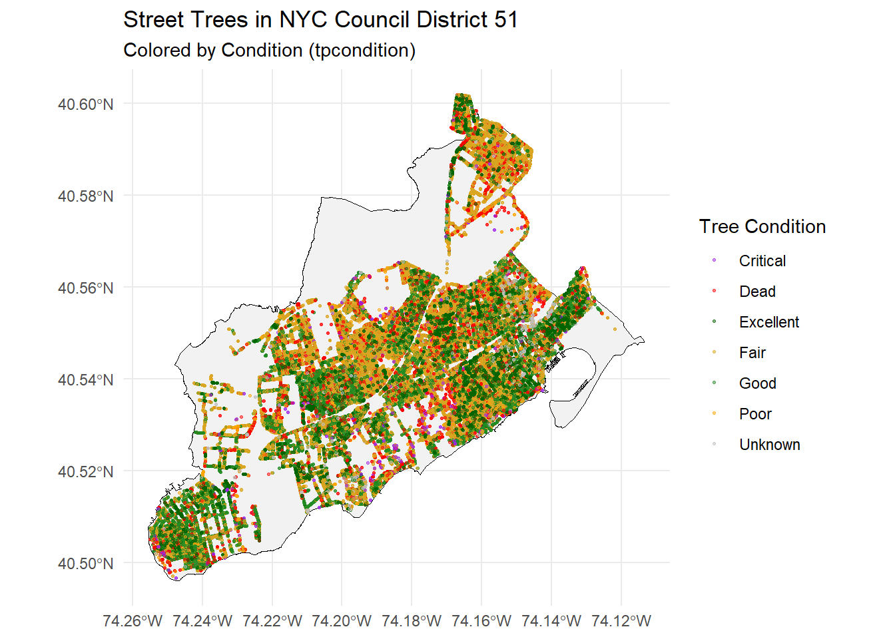
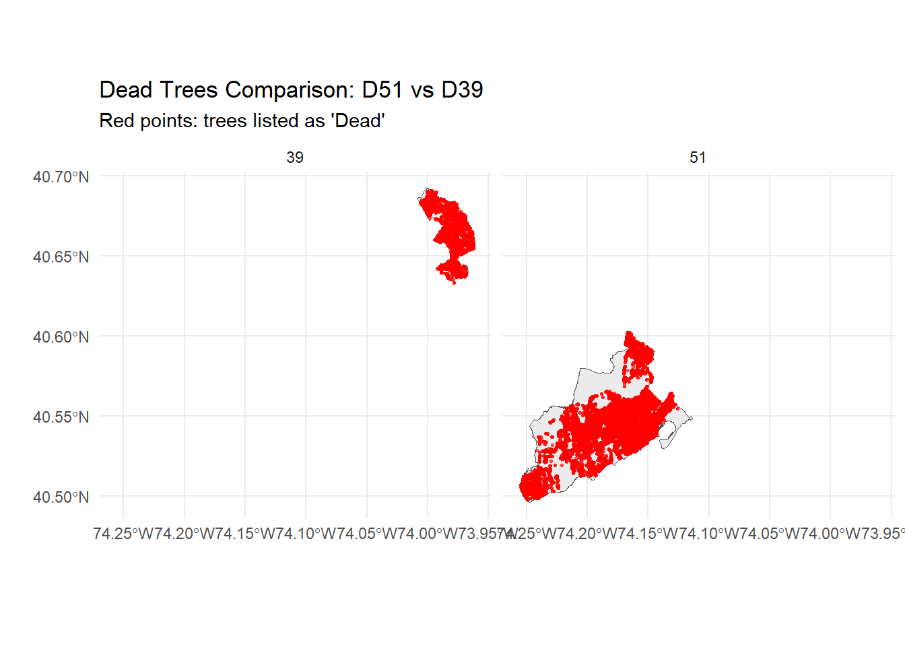

#| code-fold: true
get_nyc_council_districts <- function(
dest_dir = "data/mp03",
zip_name = "council_districts.zip"
) {
# Path to zip file
zip_path <- file.path(dest_dir, zip_name)
if (!file.exists(zip_path)) {
stop("ZIP file not found. Place it in data/mp03/ as council_districts.zip")
}
# Unzip only if needed
shp_files <- list.files(dest_dir, pattern = "\\.shp$", full.names = TRUE)
if (length(shp_files) == 0) {
unzip(zip_path, exdir = dest_dir)
shp_files <- list.files(dest_dir, pattern = "\\.shp$", full.names = TRUE)
}
if (length(shp_files) == 0) {
stop("No .shp file found after unzipping. Check ZIP contents.")
}
# Read shapefile
dist_sf <- sf::st_read(shp_files[1], quiet = TRUE)
# Transform to WGS84 for mapping
sf::st_transform(dist_sf, crs = "WGS84")
}
# Usage
nyc_council_dists <- get_nyc_council_districts()Mini-Project 03 - Visualizing and Maintaining the Green Canopy of NYC
Step 1: Data Acquisition:
For the data relating to district boundary, I downloaded the official City Counci shapefile manually from the NYC Department of Planning website and saved it as a ZIP file into my data/mp03/ directory. Then, on R, I checked for the existing ZIP file for unzipping if needed. I then read the shapefile using sf::st_read() command, which converts the geometry of the file to a format called “WGS84” in order to ensure alignment with the tree data. This helps to provide a clean and reproducible workflow for loading district boundaries without the need for duplicated files.
NYC Tree Points
In order to obtain the entire NYC Street Tree dataset, I used the NYC OpenData SODA2 API in order to return data in paged batches. Since a single request only helps to retrieve the first 1,000 rows, my code adjust for the $limit and $offset parameters to ‘page through’ the entire dataset in order to save each chunk locally in my root data folder. Responsible API usage is ensured in this process and also allows me to obtain the entire set of tree points for spatial analysis in the subsequent sections.
#| code-fold: true
library(httr2)
library(jsonlite)
library(dplyr)
Attaching package: 'dplyr'The following objects are masked from 'package:stats':
filter, lagThe following objects are masked from 'package:base':
intersect, setdiff, setequal, unionlibrary(purrr)
Attaching package: 'purrr'The following object is masked from 'package:jsonlite':
flattenlibrary(sf)Linking to GEOS 3.13.1, GDAL 3.11.0, PROJ 9.6.0; sf_use_s2() is TRUEget_nyc_tree_points <- function(
base_url = "https://data.cityofnewyork.us/resource/hn5i-inap.geojson",
dest_dir = "data/mp03/trees",
limit = 5000
) {
# Creates directory if needed
if (!dir.exists(dest_dir)) dir.create(dest_dir, recursive = TRUE)
offset <- 0
all_files <- c()
batch_num <- 1
repeat {
message("Downloading batch ", batch_num, " with offset = ", offset)
# Building paged API request
req <- request(base_url) |>
req_url_query(`$limit` = limit, `$offset` = offset)
# Performing request
resp <- req_perform(req)
# Parsing JSON as text then convert to R list
content <- resp_body_string(resp)
json_data <- fromJSON(content)
# Saving raw JSON to file
file_path <- file.path(dest_dir, paste0("trees_batch_", batch_num, ".geojson"))
writeLines(content, file_path)
all_files <- c(all_files, file_path)
# Number of rows returned
n_returned <- length(json_data$tree_id)
# Stop if last batch
if (n_returned < limit) break
# Otherwise continue to next batch
offset <- offset + limit
batch_num <- batch_num + 1
}
message("Download complete. Reading and combining all batches...")
# Read all GeoJSON batches into sf objects and combine
tree_sf <- map_df(all_files, ~ st_read(.x, quiet = TRUE))
# Return final sf object
tree_sf
}
nyc_trees <- get_nyc_tree_points()Downloading batch 1 with offset = 0Download complete. Reading and combining all batches...nyc_treesSimple feature collection with 5000 features and 13 fields
Geometry type: POINT
Dimension: XY
Bounding box: xmin: -74.2504 ymin: 40.49945 xmax: -73.70577 ymax: 40.90487
Geodetic CRS: WGS 84
First 10 features:
tpcondition stumpdiameter riskratingdate riskrating objectid
1 Excellent <NA> <NA> <NA> 86823
2 Good <NA> <NA> <NA> 87623
3 Poor <NA> <NA> <NA> 88023
4 Fair <NA> 2024-06-28 12:41:55 6 88823
5 Dead <NA> <NA> <NA> 88824
6 Fair <NA> <NA> <NA> 88825
7 Critical <NA> <NA> <NA> 89223
8 Dead <NA> <NA> <NA> 89225
9 Unknown <NA> <NA> <NA> 89625
10 Fair <NA> <NA> <NA> 89626
globalid tpstructure
1 2B457A4C-E0E4-4E17-81C4-A5449F51C804 Full
2 37195E1A-A7EE-4AA4-8389-19A0ED5C46F7 Retired
3 6BA8E72B-1901-4EF3-ABFF-D11680AB4A9B Retired
4 79A5DBAF-F305-4DA1-A4B1-7A8C8D085435 Full
5 182F6647-D9C1-4A45-ADA0-9ADEFD1ECC60 Retired
6 394AEC59-B91C-45AD-93FB-2996B0C09747 Retired
7 8717EC83-F165-495A-A1AA-1064173A681F Retired
8 FD617E56-130C-4E43-A76D-3AF989E37A2F Retired
9 380AB840-F0E9-4B14-A4D6-A99B8861065E Retired
10 8A487A6B-146A-4DE4-9AEE-835492B1E348 Retired
plantingspaceglobalid createddate dbh planteddate
1 E814CD37-9F53-4D79-AF86-3B454F9D29B9 2015-02-28 05:00:00 20 <NA>
2 A644AB79-A3CB-4F7F-923B-F308E615CCD4 2015-03-03 05:00:00 10 <NA>
3 21431016-EDB8-4A0B-B122-673125800C87 2015-03-03 05:00:00 24 <NA>
4 96FB6C55-612F-466D-9449-85A3CD2178E1 2015-03-04 05:00:00 10 <NA>
5 4796B64F-906C-4345-A4E9-5CD6133642F8 2015-03-04 05:00:00 10 <NA>
6 F31930BA-47FD-4D9F-B8A2-7A4FA4707D16 2015-03-04 05:00:00 19 <NA>
7 ED1D6BF0-C0E7-49BB-9A1A-85CBF8558ACD 2015-03-04 05:00:00 12 <NA>
8 6AC474F7-0D16-43EC-A1F9-8C9B6C14F434 2015-03-04 05:00:00 8 <NA>
9 8E628B41-0A1D-4948-AAE3-F0B3A2A8AFE8 2015-03-04 05:00:00 6 <NA>
10 C6526419-CD64-4D8D-9288-C7967124B9B4 2015-03-04 05:00:00 15 <NA>
updateddate
1 2016-10-20 17:43:53
2 2019-09-18 13:12:55
3 2018-03-27 14:00:42
4 2024-06-28 12:41:55
5 2016-10-24 02:50:43
6 2017-04-12 09:35:50
7 2020-01-08 16:27:00
8 2017-09-11 08:51:17
9 2016-12-28 12:18:15
10 2023-12-11 18:01:07
genusspecies
1 Acer nigrum - black maple
2 Fraxinus pennsylvanica - Green ash
3 Acer platanoides - Norway maple
4 Pyrus calleryana - Callery pear
5 Gleditsia triacanthos var. inermis - Thornless honeylocust
6 Fraxinus americana - white ash
7 Zelkova serrata - Japanese zelkova
8 Acer platanoides - Norway maple
9 Tilia cordata - littleleaf linden
10 Abies alba - silver fir
geometry
1 POINT (-73.81657 40.71629)
2 POINT (-73.93848 40.81299)
3 POINT (-73.83244 40.88763)
4 POINT (-74.20904 40.51958)
5 POINT (-73.98032 40.74291)
6 POINT (-73.73589 40.7359)
7 POINT (-73.96597 40.79516)
8 POINT (-74.13088 40.60673)
9 POINT (-73.96474 40.80428)
10 POINT (-73.85288 40.67823)Step 2: R Code for Task 2 (uses httr2, paging, caching, st_read, bind_rows)
#| code-fold: true
#| label: setup-libs
#| message: false
#| warning: false
library(httr2)
library(sf)
library(dplyr)
get_nyc_tree_points <- function(
base_url = "https://data.cityofnewyork.us/resource/hn5i-inap.geojson",
dest_dir = "data/mp03",
limit = 2000,
max_batches = Inf
) {
if (!dir.exists(dest_dir)) {
dir.create(dest_dir, recursive = TRUE)
}
offset <- 0
batch_idx <- 1
trees_list <- list()
repeat {
if (batch_idx > max_batches) {
message("Reached max_batches = ", max_batches, ". Stopping early.")
break
}
file_path <- file.path(
dest_dir,
sprintf("tree_points_%03d.geojson", batch_idx)
)
# Download only if this batch file doesn't already exist
if (!file.exists(file_path)) {
message("Downloading batch ", batch_idx,
" (offset = ", offset, ", limit = ", limit, ")")
req <- request(base_url) |>
req_url_query(`$limit` = limit, `$offset` = offset)
resp <- tryCatch(
req_perform(req),
error = function(e) {
warning("Request failed for batch ", batch_idx, ": ",
conditionMessage(e))
return(NULL)
}
)
if (is.null(resp)) {
message("Stopping because of repeated request errors.")
break
}
writeBin(resp_body_raw(resp), file_path)
} else {
message("Using cached file: ", basename(file_path))
}
# Read this batch as sf from GeoJSON
trees_batch <- sf::st_read(file_path, quiet = TRUE)
# 🔧 Normalize ALL datetime columns to character so bind_rows won't choke
dt_cols <- vapply(trees_batch, inherits, logical(1), what = "POSIXt")
if (any(dt_cols)) {
trees_batch[, dt_cols] <- lapply(trees_batch[, dt_cols, drop = FALSE], as.character)
}
trees_list[[batch_idx]] <- trees_batch
n_returned <- nrow(trees_batch)
if (n_returned == 0 || n_returned < limit) {
message("Final batch size = ", n_returned, ". Finished paging.")
break
}
offset <- offset + limit
batch_idx <- batch_idx + 1
}
# Final safety pass: making sure any leftover POSIX columns are characters
trees_list <- lapply(trees_list, function(x) {
dt_cols <- vapply(x, inherits, logical(1), what = "POSIXt")
if (any(dt_cols)) {
x[, dt_cols] <- lapply(x[, dt_cols, drop = FALSE], as.character)
}
x
})
dplyr::bind_rows(trees_list)
}
nyc_trees <- get_nyc_tree_points()Using cached file: tree_points_001.geojsonWarning in `[<-.data.frame`(`*tmp*`, , dt_cols, value = list(riskratingdate =
c(NA, : provided 5 variables to replace 4 variablesUsing cached file: tree_points_002.geojsonWarning in `[<-.data.frame`(`*tmp*`, , dt_cols, value = list(riskratingdate =
c("2017-11-14 13:58:00", : provided 5 variables to replace 4 variablesUsing cached file: tree_points_003.geojsonWarning in `[<-.data.frame`(`*tmp*`, , dt_cols, value = list(riskratingdate =
c("2022-06-14 15:48:56", : provided 5 variables to replace 4 variablesUsing cached file: tree_points_004.geojsonWarning in `[<-.data.frame`(`*tmp*`, , dt_cols, value = list(riskratingdate =
c(NA, : provided 5 variables to replace 4 variablesUsing cached file: tree_points_005.geojsonWarning in `[<-.data.frame`(`*tmp*`, , dt_cols, value = list(riskratingdate =
c(NA, : provided 5 variables to replace 4 variablesUsing cached file: tree_points_006.geojsonWarning in `[<-.data.frame`(`*tmp*`, , dt_cols, value = list(riskratingdate =
c("2025-07-14 16:03:39", : provided 5 variables to replace 4 variablesUsing cached file: tree_points_007.geojsonWarning in `[<-.data.frame`(`*tmp*`, , dt_cols, value = list(riskratingdate =
c("2025-11-03 12:26:45", : provided 5 variables to replace 4 variablesUsing cached file: tree_points_008.geojsonWarning in `[<-.data.frame`(`*tmp*`, , dt_cols, value = list(riskratingdate =
c(NA, : provided 5 variables to replace 4 variablesUsing cached file: tree_points_009.geojsonWarning in `[<-.data.frame`(`*tmp*`, , dt_cols, value = list(riskratingdate =
c("2022-05-17 12:34:28", : provided 5 variables to replace 4 variablesUsing cached file: tree_points_010.geojsonWarning in `[<-.data.frame`(`*tmp*`, , dt_cols, value = list(riskratingdate =
c("2021-12-10 19:31:34", : provided 5 variables to replace 4 variablesUsing cached file: tree_points_011.geojsonWarning in `[<-.data.frame`(`*tmp*`, , dt_cols, value = list(riskratingdate =
c("2019-10-01 22:37:15", : provided 5 variables to replace 4 variablesUsing cached file: tree_points_012.geojsonWarning in `[<-.data.frame`(`*tmp*`, , dt_cols, value = list(riskratingdate =
c("2022-04-13 03:25:36", : provided 5 variables to replace 4 variablesUsing cached file: tree_points_013.geojsonWarning in `[<-.data.frame`(`*tmp*`, , dt_cols, value = list(riskratingdate =
c(NA, : provided 5 variables to replace 4 variablesUsing cached file: tree_points_014.geojsonWarning in `[<-.data.frame`(`*tmp*`, , dt_cols, value = list(riskratingdate =
c("2021-01-06 14:24:15", : provided 5 variables to replace 4 variablesUsing cached file: tree_points_015.geojsonWarning in `[<-.data.frame`(`*tmp*`, , dt_cols, value = list(riskratingdate =
c(NA, : provided 5 variables to replace 4 variablesUsing cached file: tree_points_016.geojsonWarning in `[<-.data.frame`(`*tmp*`, , dt_cols, value = list(riskratingdate =
c("2025-08-14 20:44:39", : provided 5 variables to replace 4 variablesUsing cached file: tree_points_017.geojsonWarning in `[<-.data.frame`(`*tmp*`, , dt_cols, value = list(riskratingdate =
c("2023-11-24 16:00:15", : provided 4 variables to replace 3 variablesUsing cached file: tree_points_018.geojsonWarning in `[<-.data.frame`(`*tmp*`, , dt_cols, value = list(riskratingdate =
c("2022-02-10 13:49:00", : provided 4 variables to replace 3 variablesUsing cached file: tree_points_019.geojsonWarning in `[<-.data.frame`(`*tmp*`, , dt_cols, value = list(riskratingdate =
c("2021-10-29 14:37:00", : provided 4 variables to replace 3 variablesUsing cached file: tree_points_020.geojsonWarning in `[<-.data.frame`(`*tmp*`, , dt_cols, value = list(riskratingdate =
c(NA, : provided 5 variables to replace 4 variablesUsing cached file: tree_points_021.geojsonWarning in `[<-.data.frame`(`*tmp*`, , dt_cols, value = list(riskratingdate =
c("2025-01-31 16:09:18", : provided 5 variables to replace 4 variablesUsing cached file: tree_points_022.geojsonWarning in `[<-.data.frame`(`*tmp*`, , dt_cols, value = list(riskratingdate =
c("2021-12-17 14:31:36", : provided 5 variables to replace 4 variablesUsing cached file: tree_points_023.geojsonWarning in `[<-.data.frame`(`*tmp*`, , dt_cols, value = list(riskratingdate =
c("2017-07-13 17:51:00", : provided 5 variables to replace 4 variablesUsing cached file: tree_points_024.geojsonWarning in `[<-.data.frame`(`*tmp*`, , dt_cols, value = list(riskratingdate =
c(NA, : provided 5 variables to replace 4 variablesUsing cached file: tree_points_025.geojsonWarning in `[<-.data.frame`(`*tmp*`, , dt_cols, value = list(riskratingdate =
c("2020-01-11 14:51:23", : provided 5 variables to replace 4 variablesUsing cached file: tree_points_026.geojsonWarning in `[<-.data.frame`(`*tmp*`, , dt_cols, value = list(riskratingdate =
c("2024-06-06 14:26:26", : provided 5 variables to replace 4 variablesUsing cached file: tree_points_027.geojsonWarning in `[<-.data.frame`(`*tmp*`, , dt_cols, value = list(riskratingdate =
c("2023-10-17 15:15:36", : provided 5 variables to replace 4 variablesUsing cached file: tree_points_028.geojsonWarning in `[<-.data.frame`(`*tmp*`, , dt_cols, value = list(riskratingdate =
c("2020-12-14 17:11:01", : provided 5 variables to replace 4 variablesUsing cached file: tree_points_029.geojsonWarning in `[<-.data.frame`(`*tmp*`, , dt_cols, value = list(riskratingdate =
c(NA, : provided 5 variables to replace 4 variablesUsing cached file: tree_points_030.geojsonWarning in `[<-.data.frame`(`*tmp*`, , dt_cols, value = list(riskratingdate =
c(NA, : provided 5 variables to replace 4 variablesUsing cached file: tree_points_031.geojsonWarning in `[<-.data.frame`(`*tmp*`, , dt_cols, value = list(riskratingdate =
c(NA, : provided 5 variables to replace 4 variablesUsing cached file: tree_points_032.geojsonWarning in `[<-.data.frame`(`*tmp*`, , dt_cols, value = list(riskratingdate =
c(NA, : provided 5 variables to replace 4 variablesUsing cached file: tree_points_033.geojsonWarning in `[<-.data.frame`(`*tmp*`, , dt_cols, value = list(riskratingdate =
c("2024-11-05 15:15:42", : provided 5 variables to replace 4 variablesUsing cached file: tree_points_034.geojsonWarning in `[<-.data.frame`(`*tmp*`, , dt_cols, value = list(riskratingdate =
c("2022-02-10 18:37:44", : provided 5 variables to replace 4 variablesUsing cached file: tree_points_035.geojsonWarning in `[<-.data.frame`(`*tmp*`, , dt_cols, value = list(riskratingdate =
c("2021-09-08 15:34:03", : provided 5 variables to replace 4 variablesUsing cached file: tree_points_036.geojsonWarning in `[<-.data.frame`(`*tmp*`, , dt_cols, value = list(riskratingdate =
c("2023-03-30 10:35:03", : provided 5 variables to replace 4 variablesUsing cached file: tree_points_037.geojsonWarning in `[<-.data.frame`(`*tmp*`, , dt_cols, value = list(riskratingdate =
c("2019-12-20 20:48:33", : provided 5 variables to replace 4 variablesUsing cached file: tree_points_038.geojsonWarning in `[<-.data.frame`(`*tmp*`, , dt_cols, value = list(riskratingdate =
c("2025-07-03 14:47:21", : provided 5 variables to replace 4 variablesUsing cached file: tree_points_039.geojsonWarning in `[<-.data.frame`(`*tmp*`, , dt_cols, value = list(riskratingdate =
c("2022-04-19 17:46:55", : provided 5 variables to replace 4 variablesUsing cached file: tree_points_040.geojsonWarning in `[<-.data.frame`(`*tmp*`, , dt_cols, value = list(riskratingdate =
c(NA, : provided 5 variables to replace 4 variablesUsing cached file: tree_points_041.geojsonWarning in `[<-.data.frame`(`*tmp*`, , dt_cols, value = list(riskratingdate =
c("2025-06-23 15:42:40", : provided 5 variables to replace 4 variablesUsing cached file: tree_points_042.geojsonWarning in `[<-.data.frame`(`*tmp*`, , dt_cols, value = list(riskratingdate =
c("2021-12-30 12:23:34", : provided 5 variables to replace 4 variablesUsing cached file: tree_points_043.geojsonWarning in `[<-.data.frame`(`*tmp*`, , dt_cols, value = list(riskratingdate =
c("2017-09-15 10:07:00", : provided 5 variables to replace 4 variablesUsing cached file: tree_points_044.geojsonWarning in `[<-.data.frame`(`*tmp*`, , dt_cols, value = list(riskratingdate =
c("2023-06-16 14:53:12", : provided 5 variables to replace 4 variablesUsing cached file: tree_points_045.geojsonWarning in `[<-.data.frame`(`*tmp*`, , dt_cols, value = list(riskratingdate =
c("2022-02-28 16:26:04", : provided 5 variables to replace 4 variablesUsing cached file: tree_points_046.geojsonWarning in `[<-.data.frame`(`*tmp*`, , dt_cols, value = list(riskratingdate =
c("2024-09-24 15:01:44", : provided 5 variables to replace 4 variablesUsing cached file: tree_points_047.geojsonWarning in `[<-.data.frame`(`*tmp*`, , dt_cols, value = list(riskratingdate =
c("2024-10-16 14:16:21", : provided 5 variables to replace 4 variablesUsing cached file: tree_points_048.geojsonWarning in `[<-.data.frame`(`*tmp*`, , dt_cols, value = list(riskratingdate =
c(NA, : provided 5 variables to replace 4 variablesUsing cached file: tree_points_049.geojsonWarning in `[<-.data.frame`(`*tmp*`, , dt_cols, value = list(riskratingdate =
c("2021-11-01 15:00:51", : provided 4 variables to replace 3 variablesUsing cached file: tree_points_050.geojsonWarning in `[<-.data.frame`(`*tmp*`, , dt_cols, value = list(riskratingdate =
c("2018-06-13 11:00:00", : provided 5 variables to replace 4 variablesUsing cached file: tree_points_051.geojsonWarning in `[<-.data.frame`(`*tmp*`, , dt_cols, value = list(riskratingdate =
c("2023-07-17 16:49:45", : provided 5 variables to replace 4 variablesUsing cached file: tree_points_052.geojsonWarning in `[<-.data.frame`(`*tmp*`, , dt_cols, value = list(riskratingdate =
c("2021-10-05 02:46:15", : provided 5 variables to replace 4 variablesUsing cached file: tree_points_053.geojsonWarning in `[<-.data.frame`(`*tmp*`, , dt_cols, value = list(riskratingdate =
c(NA, : provided 4 variables to replace 3 variablesUsing cached file: tree_points_054.geojsonWarning in `[<-.data.frame`(`*tmp*`, , dt_cols, value = list(riskratingdate =
c("2023-12-21 17:43:30", : provided 5 variables to replace 4 variablesUsing cached file: tree_points_055.geojsonWarning in `[<-.data.frame`(`*tmp*`, , dt_cols, value = list(riskratingdate =
c("2022-03-31 13:46:08", : provided 5 variables to replace 4 variablesUsing cached file: tree_points_056.geojsonWarning in `[<-.data.frame`(`*tmp*`, , dt_cols, value = list(riskratingdate =
c(NA, : provided 5 variables to replace 4 variablesUsing cached file: tree_points_057.geojsonWarning in `[<-.data.frame`(`*tmp*`, , dt_cols, value = list(riskratingdate =
c("2022-06-02 14:13:39", : provided 5 variables to replace 4 variablesUsing cached file: tree_points_058.geojsonWarning in `[<-.data.frame`(`*tmp*`, , dt_cols, value = list(riskratingdate =
c("2025-10-06 18:05:52", : provided 5 variables to replace 4 variablesUsing cached file: tree_points_059.geojsonWarning in `[<-.data.frame`(`*tmp*`, , dt_cols, value = list(riskratingdate =
c(NA, : provided 4 variables to replace 3 variablesUsing cached file: tree_points_060.geojsonWarning in `[<-.data.frame`(`*tmp*`, , dt_cols, value = list(riskratingdate =
c("2025-07-09 12:50:52", : provided 5 variables to replace 4 variablesUsing cached file: tree_points_061.geojsonWarning in `[<-.data.frame`(`*tmp*`, , dt_cols, value = list(riskratingdate =
c("2022-04-01 14:37:08", : provided 5 variables to replace 4 variablesUsing cached file: tree_points_062.geojsonWarning in `[<-.data.frame`(`*tmp*`, , dt_cols, value = list(riskratingdate =
c("2025-09-16 16:17:41", : provided 4 variables to replace 3 variablesUsing cached file: tree_points_063.geojsonWarning in `[<-.data.frame`(`*tmp*`, , dt_cols, value = list(riskratingdate =
c("2023-08-11 13:51:46", : provided 5 variables to replace 4 variablesUsing cached file: tree_points_064.geojsonWarning in `[<-.data.frame`(`*tmp*`, , dt_cols, value = list(riskratingdate =
c("2022-01-18 17:32:08", : provided 5 variables to replace 4 variablesUsing cached file: tree_points_065.geojsonWarning in `[<-.data.frame`(`*tmp*`, , dt_cols, value = list(riskratingdate =
c(NA, : provided 5 variables to replace 4 variablesUsing cached file: tree_points_066.geojsonWarning in `[<-.data.frame`(`*tmp*`, , dt_cols, value = list(riskratingdate =
c(NA, : provided 5 variables to replace 4 variablesUsing cached file: tree_points_067.geojsonWarning in `[<-.data.frame`(`*tmp*`, , dt_cols, value = list(riskratingdate =
c("2021-01-06 18:46:00", : provided 5 variables to replace 4 variablesUsing cached file: tree_points_068.geojsonWarning in `[<-.data.frame`(`*tmp*`, , dt_cols, value = list(riskratingdate =
c(NA, : provided 4 variables to replace 3 variablesUsing cached file: tree_points_069.geojsonWarning in `[<-.data.frame`(`*tmp*`, , dt_cols, value = list(riskratingdate =
c("2025-04-15 16:18:32", : provided 5 variables to replace 4 variablesUsing cached file: tree_points_070.geojsonWarning in `[<-.data.frame`(`*tmp*`, , dt_cols, value = list(riskratingdate =
c("2022-03-28 17:09:21", : provided 5 variables to replace 4 variablesUsing cached file: tree_points_071.geojsonWarning in `[<-.data.frame`(`*tmp*`, , dt_cols, value = list(riskratingdate =
c("2025-05-30 14:51:55", : provided 4 variables to replace 3 variablesUsing cached file: tree_points_072.geojsonWarning in `[<-.data.frame`(`*tmp*`, , dt_cols, value = list(riskratingdate =
c(NA, : provided 4 variables to replace 3 variablesUsing cached file: tree_points_073.geojsonWarning in `[<-.data.frame`(`*tmp*`, , dt_cols, value = list(riskratingdate =
c("2020-02-14 22:03:54", : provided 5 variables to replace 4 variablesUsing cached file: tree_points_074.geojsonWarning in `[<-.data.frame`(`*tmp*`, , dt_cols, value = list(riskratingdate =
c("2021-11-09 18:24:48", : provided 5 variables to replace 4 variablesUsing cached file: tree_points_075.geojsonWarning in `[<-.data.frame`(`*tmp*`, , dt_cols, value = list(riskratingdate =
c("2022-02-22 16:06:07", : provided 4 variables to replace 3 variablesUsing cached file: tree_points_076.geojsonWarning in `[<-.data.frame`(`*tmp*`, , dt_cols, value = list(riskratingdate =
c("2023-11-02 18:01:34", : provided 5 variables to replace 4 variablesUsing cached file: tree_points_077.geojsonWarning in `[<-.data.frame`(`*tmp*`, , dt_cols, value = list(riskratingdate =
c(NA, : provided 4 variables to replace 3 variablesUsing cached file: tree_points_078.geojsonWarning in `[<-.data.frame`(`*tmp*`, , dt_cols, value = list(riskratingdate =
c(NA, : provided 5 variables to replace 4 variablesUsing cached file: tree_points_079.geojsonWarning in `[<-.data.frame`(`*tmp*`, , dt_cols, value = list(riskratingdate =
c(NA, : provided 5 variables to replace 4 variablesUsing cached file: tree_points_080.geojsonWarning in `[<-.data.frame`(`*tmp*`, , dt_cols, value = list(riskratingdate =
c(NA, : provided 5 variables to replace 4 variablesUsing cached file: tree_points_081.geojsonWarning in `[<-.data.frame`(`*tmp*`, , dt_cols, value = list(riskratingdate =
c(NA, : provided 5 variables to replace 4 variablesUsing cached file: tree_points_082.geojsonWarning in `[<-.data.frame`(`*tmp*`, , dt_cols, value = list(riskratingdate =
c("2020-07-13 13:26:00", : provided 4 variables to replace 3 variablesUsing cached file: tree_points_083.geojsonWarning in `[<-.data.frame`(`*tmp*`, , dt_cols, value = list(riskratingdate =
c("2024-12-11 15:46:11", : provided 4 variables to replace 3 variablesUsing cached file: tree_points_084.geojsonWarning in `[<-.data.frame`(`*tmp*`, , dt_cols, value = list(riskratingdate =
c("2024-03-19 18:12:25", : provided 5 variables to replace 4 variablesUsing cached file: tree_points_085.geojsonWarning in `[<-.data.frame`(`*tmp*`, , dt_cols, value = list(riskratingdate =
c("2022-03-08 17:09:27", : provided 5 variables to replace 4 variablesUsing cached file: tree_points_086.geojsonWarning in `[<-.data.frame`(`*tmp*`, , dt_cols, value = list(riskratingdate =
c(NA, : provided 5 variables to replace 4 variablesUsing cached file: tree_points_087.geojsonWarning in `[<-.data.frame`(`*tmp*`, , dt_cols, value = list(riskratingdate =
c("2024-08-27 14:07:22", : provided 5 variables to replace 4 variablesUsing cached file: tree_points_088.geojsonWarning in `[<-.data.frame`(`*tmp*`, , dt_cols, value = list(riskratingdate =
c("2024-09-05 12:47:00", : provided 5 variables to replace 4 variablesUsing cached file: tree_points_089.geojsonWarning in `[<-.data.frame`(`*tmp*`, , dt_cols, value = list(riskratingdate =
c("2025-10-24 12:24:40", : provided 5 variables to replace 4 variablesUsing cached file: tree_points_090.geojsonWarning in `[<-.data.frame`(`*tmp*`, , dt_cols, value = list(riskratingdate =
c("2018-05-11 12:03:38", : provided 4 variables to replace 3 variablesUsing cached file: tree_points_091.geojsonWarning in `[<-.data.frame`(`*tmp*`, , dt_cols, value = list(riskratingdate =
c("2022-09-07 19:07:13", : provided 5 variables to replace 4 variablesUsing cached file: tree_points_092.geojsonWarning in `[<-.data.frame`(`*tmp*`, , dt_cols, value = list(riskratingdate =
c(NA, : provided 4 variables to replace 3 variablesUsing cached file: tree_points_093.geojsonWarning in `[<-.data.frame`(`*tmp*`, , dt_cols, value = list(riskratingdate =
c("2024-06-28 19:31:46", : provided 5 variables to replace 4 variablesUsing cached file: tree_points_094.geojsonWarning in `[<-.data.frame`(`*tmp*`, , dt_cols, value = list(riskratingdate =
c(NA, : provided 5 variables to replace 4 variablesUsing cached file: tree_points_095.geojsonWarning in `[<-.data.frame`(`*tmp*`, , dt_cols, value = list(riskratingdate =
c("2024-04-17 15:36:37", : provided 5 variables to replace 4 variablesUsing cached file: tree_points_096.geojsonWarning in `[<-.data.frame`(`*tmp*`, , dt_cols, value = list(riskratingdate =
c(NA, : provided 4 variables to replace 3 variablesUsing cached file: tree_points_097.geojsonWarning in `[<-.data.frame`(`*tmp*`, , dt_cols, value = list(riskratingdate =
c(NA, : provided 5 variables to replace 4 variablesUsing cached file: tree_points_098.geojsonWarning in `[<-.data.frame`(`*tmp*`, , dt_cols, value = list(riskratingdate =
c(NA, : provided 5 variables to replace 4 variablesUsing cached file: tree_points_099.geojsonWarning in `[<-.data.frame`(`*tmp*`, , dt_cols, value = list(riskratingdate =
c("2025-11-12 15:12:16", : provided 5 variables to replace 4 variablesUsing cached file: tree_points_100.geojsonWarning in `[<-.data.frame`(`*tmp*`, , dt_cols, value = list(riskratingdate =
c("2024-11-14 16:56:53", : provided 5 variables to replace 4 variablesUsing cached file: tree_points_101.geojsonWarning in `[<-.data.frame`(`*tmp*`, , dt_cols, value = list(riskratingdate =
c("2025-07-14 15:50:01", : provided 4 variables to replace 3 variablesUsing cached file: tree_points_102.geojsonWarning in `[<-.data.frame`(`*tmp*`, , dt_cols, value = list(riskratingdate =
c("2021-03-04 13:03:27", : provided 5 variables to replace 4 variablesUsing cached file: tree_points_103.geojsonWarning in `[<-.data.frame`(`*tmp*`, , dt_cols, value = list(riskratingdate =
c("2024-07-07 14:53:33", : provided 5 variables to replace 4 variablesUsing cached file: tree_points_104.geojsonWarning in `[<-.data.frame`(`*tmp*`, , dt_cols, value = list(riskratingdate =
c("2022-03-10 16:07:22", : provided 5 variables to replace 4 variablesUsing cached file: tree_points_105.geojsonWarning in `[<-.data.frame`(`*tmp*`, , dt_cols, value = list(riskratingdate =
c(NA, : provided 4 variables to replace 3 variablesUsing cached file: tree_points_106.geojsonWarning in `[<-.data.frame`(`*tmp*`, , dt_cols, value = list(riskratingdate =
c(NA, : provided 5 variables to replace 4 variablesUsing cached file: tree_points_107.geojsonWarning in `[<-.data.frame`(`*tmp*`, , dt_cols, value = list(riskratingdate =
c(NA, : provided 4 variables to replace 3 variablesUsing cached file: tree_points_108.geojsonWarning in `[<-.data.frame`(`*tmp*`, , dt_cols, value = list(riskratingdate =
c("2018-01-26 11:44:00", : provided 5 variables to replace 4 variablesUsing cached file: tree_points_109.geojsonWarning in `[<-.data.frame`(`*tmp*`, , dt_cols, value = list(riskratingdate =
c(NA, : provided 5 variables to replace 4 variablesUsing cached file: tree_points_110.geojsonWarning in `[<-.data.frame`(`*tmp*`, , dt_cols, value = list(riskratingdate =
c(NA, : provided 5 variables to replace 4 variablesUsing cached file: tree_points_111.geojsonWarning in `[<-.data.frame`(`*tmp*`, , dt_cols, value = list(riskratingdate =
c("2021-08-24 11:55:00", : provided 5 variables to replace 4 variablesUsing cached file: tree_points_112.geojsonWarning in `[<-.data.frame`(`*tmp*`, , dt_cols, value = list(riskratingdate =
c(NA, : provided 5 variables to replace 4 variablesUsing cached file: tree_points_113.geojsonWarning in `[<-.data.frame`(`*tmp*`, , dt_cols, value = list(riskratingdate =
c(NA, : provided 4 variables to replace 3 variablesUsing cached file: tree_points_114.geojsonWarning in `[<-.data.frame`(`*tmp*`, , dt_cols, value = list(riskratingdate =
c(NA, : provided 4 variables to replace 3 variablesUsing cached file: tree_points_115.geojsonWarning in `[<-.data.frame`(`*tmp*`, , dt_cols, value = list(riskratingdate =
c("2022-01-13 15:42:01", : provided 5 variables to replace 4 variablesUsing cached file: tree_points_116.geojsonWarning in `[<-.data.frame`(`*tmp*`, , dt_cols, value = list(riskratingdate =
c("2020-10-20 13:59:00", : provided 5 variables to replace 4 variablesUsing cached file: tree_points_117.geojsonWarning in `[<-.data.frame`(`*tmp*`, , dt_cols, value = list(riskratingdate =
c("2023-05-22 15:13:53", : provided 4 variables to replace 3 variablesUsing cached file: tree_points_118.geojsonWarning in `[<-.data.frame`(`*tmp*`, , dt_cols, value = list(riskratingdate =
c(NA, : provided 5 variables to replace 4 variablesUsing cached file: tree_points_119.geojsonWarning in `[<-.data.frame`(`*tmp*`, , dt_cols, value = list(riskratingdate =
c("2020-03-04 18:47:26", : provided 5 variables to replace 4 variablesUsing cached file: tree_points_120.geojsonWarning in `[<-.data.frame`(`*tmp*`, , dt_cols, value = list(riskratingdate =
c(NA, : provided 5 variables to replace 4 variablesUsing cached file: tree_points_121.geojsonWarning in `[<-.data.frame`(`*tmp*`, , dt_cols, value = list(riskratingdate =
c(NA, : provided 4 variables to replace 3 variablesUsing cached file: tree_points_122.geojsonWarning in `[<-.data.frame`(`*tmp*`, , dt_cols, value = list(riskratingdate =
c("2017-06-15 14:26:08", : provided 5 variables to replace 4 variablesUsing cached file: tree_points_123.geojsonWarning in `[<-.data.frame`(`*tmp*`, , dt_cols, value = list(riskratingdate =
c(NA, : provided 4 variables to replace 3 variablesUsing cached file: tree_points_124.geojsonWarning in `[<-.data.frame`(`*tmp*`, , dt_cols, value = list(riskratingdate =
c("2020-03-12 12:22:00", : provided 5 variables to replace 4 variablesUsing cached file: tree_points_125.geojsonWarning in `[<-.data.frame`(`*tmp*`, , dt_cols, value = list(riskratingdate =
c(NA, : provided 5 variables to replace 4 variablesUsing cached file: tree_points_126.geojsonWarning in `[<-.data.frame`(`*tmp*`, , dt_cols, value = list(riskratingdate =
c("2021-12-27 18:22:44", : provided 5 variables to replace 4 variablesUsing cached file: tree_points_127.geojsonWarning in `[<-.data.frame`(`*tmp*`, , dt_cols, value = list(riskratingdate =
c("2023-04-12 17:23:35", : provided 5 variables to replace 4 variablesUsing cached file: tree_points_128.geojsonWarning in `[<-.data.frame`(`*tmp*`, , dt_cols, value = list(riskratingdate =
c(NA, : provided 5 variables to replace 4 variablesUsing cached file: tree_points_129.geojsonWarning in `[<-.data.frame`(`*tmp*`, , dt_cols, value = list(riskratingdate =
c(NA, : provided 4 variables to replace 3 variablesUsing cached file: tree_points_130.geojsonWarning in `[<-.data.frame`(`*tmp*`, , dt_cols, value = list(riskratingdate =
c("2021-09-27 17:41:00", : provided 4 variables to replace 3 variablesUsing cached file: tree_points_131.geojsonWarning in `[<-.data.frame`(`*tmp*`, , dt_cols, value = list(riskratingdate =
c("2023-08-02 16:10:31", : provided 4 variables to replace 3 variablesUsing cached file: tree_points_132.geojsonWarning in `[<-.data.frame`(`*tmp*`, , dt_cols, value = list(riskratingdate =
c(NA, : provided 5 variables to replace 4 variablesUsing cached file: tree_points_133.geojsonWarning in `[<-.data.frame`(`*tmp*`, , dt_cols, value = list(riskratingdate =
c(NA, : provided 5 variables to replace 4 variablesUsing cached file: tree_points_134.geojsonWarning in `[<-.data.frame`(`*tmp*`, , dt_cols, value = list(riskratingdate =
c(NA, : provided 4 variables to replace 3 variablesUsing cached file: tree_points_135.geojsonWarning in `[<-.data.frame`(`*tmp*`, , dt_cols, value = list(riskratingdate =
c("2018-02-13 12:37:00", : provided 5 variables to replace 4 variablesUsing cached file: tree_points_136.geojsonWarning in `[<-.data.frame`(`*tmp*`, , dt_cols, value = list(riskratingdate =
c("2020-01-13 17:01:00", : provided 5 variables to replace 4 variablesUsing cached file: tree_points_137.geojsonWarning in `[<-.data.frame`(`*tmp*`, , dt_cols, value = list(riskratingdate =
c("2019-06-24 14:08:14", : provided 5 variables to replace 4 variablesUsing cached file: tree_points_138.geojsonWarning in `[<-.data.frame`(`*tmp*`, , dt_cols, value = list(riskratingdate =
c(NA, : provided 5 variables to replace 4 variablesUsing cached file: tree_points_139.geojsonWarning in `[<-.data.frame`(`*tmp*`, , dt_cols, value = list(riskratingdate =
c("2025-02-19 19:36:30", : provided 4 variables to replace 3 variablesUsing cached file: tree_points_140.geojsonWarning in `[<-.data.frame`(`*tmp*`, , dt_cols, value = list(riskratingdate =
c("2024-01-05 18:19:35", : provided 5 variables to replace 4 variablesUsing cached file: tree_points_141.geojsonWarning in `[<-.data.frame`(`*tmp*`, , dt_cols, value = list(riskratingdate =
c(NA, : provided 4 variables to replace 3 variablesUsing cached file: tree_points_142.geojsonWarning in `[<-.data.frame`(`*tmp*`, , dt_cols, value = list(riskratingdate =
c("2024-01-18 15:53:03", : provided 4 variables to replace 3 variablesUsing cached file: tree_points_143.geojsonWarning in `[<-.data.frame`(`*tmp*`, , dt_cols, value = list(riskratingdate =
c("2020-02-24 18:36:06", : provided 5 variables to replace 4 variablesUsing cached file: tree_points_144.geojsonWarning in `[<-.data.frame`(`*tmp*`, , dt_cols, value = list(riskratingdate =
c("2025-10-20 18:53:43", : provided 4 variables to replace 3 variablesUsing cached file: tree_points_145.geojsonWarning in `[<-.data.frame`(`*tmp*`, , dt_cols, value = list(riskratingdate =
c("2024-04-10 13:06:17", : provided 5 variables to replace 4 variablesUsing cached file: tree_points_146.geojsonWarning in `[<-.data.frame`(`*tmp*`, , dt_cols, value = list(riskratingdate =
c(NA, : provided 5 variables to replace 4 variablesUsing cached file: tree_points_147.geojsonWarning in `[<-.data.frame`(`*tmp*`, , dt_cols, value = list(riskratingdate =
c("2017-06-28 04:00:00", : provided 5 variables to replace 4 variablesUsing cached file: tree_points_148.geojsonWarning in `[<-.data.frame`(`*tmp*`, , dt_cols, value = list(riskratingdate =
c("2018-09-12 13:41:27", : provided 5 variables to replace 4 variablesUsing cached file: tree_points_149.geojsonWarning in `[<-.data.frame`(`*tmp*`, , dt_cols, value = list(riskratingdate =
c(NA, : provided 5 variables to replace 4 variablesUsing cached file: tree_points_150.geojsonWarning in `[<-.data.frame`(`*tmp*`, , dt_cols, value = list(riskratingdate =
c("2017-07-11 09:50:00", : provided 5 variables to replace 4 variablesUsing cached file: tree_points_151.geojsonWarning in `[<-.data.frame`(`*tmp*`, , dt_cols, value = list(riskratingdate =
c(NA, : provided 5 variables to replace 4 variablesUsing cached file: tree_points_152.geojsonWarning in `[<-.data.frame`(`*tmp*`, , dt_cols, value = list(riskratingdate =
c("2023-10-10 17:42:02", : provided 5 variables to replace 4 variablesUsing cached file: tree_points_153.geojsonWarning in `[<-.data.frame`(`*tmp*`, , dt_cols, value = list(riskratingdate =
c(NA, : provided 5 variables to replace 4 variablesUsing cached file: tree_points_154.geojsonWarning in `[<-.data.frame`(`*tmp*`, , dt_cols, value = list(riskratingdate =
c("2022-08-22 14:13:44", : provided 5 variables to replace 4 variablesUsing cached file: tree_points_155.geojsonWarning in `[<-.data.frame`(`*tmp*`, , dt_cols, value = list(riskratingdate =
c("2025-03-07 15:55:14", : provided 4 variables to replace 3 variablesUsing cached file: tree_points_156.geojsonWarning in `[<-.data.frame`(`*tmp*`, , dt_cols, value = list(riskratingdate =
c(NA, : provided 5 variables to replace 4 variablesUsing cached file: tree_points_157.geojsonWarning in `[<-.data.frame`(`*tmp*`, , dt_cols, value = list(riskratingdate =
c(NA, : provided 5 variables to replace 4 variablesUsing cached file: tree_points_158.geojsonWarning in `[<-.data.frame`(`*tmp*`, , dt_cols, value = list(riskratingdate =
c("2023-09-14 18:06:20", : provided 5 variables to replace 4 variablesUsing cached file: tree_points_159.geojsonWarning in `[<-.data.frame`(`*tmp*`, , dt_cols, value = list(riskratingdate =
c("2018-04-30 11:36:00", : provided 5 variables to replace 4 variablesUsing cached file: tree_points_160.geojsonWarning in `[<-.data.frame`(`*tmp*`, , dt_cols, value = list(riskratingdate =
c(NA, : provided 5 variables to replace 4 variablesUsing cached file: tree_points_161.geojsonWarning in `[<-.data.frame`(`*tmp*`, , dt_cols, value = list(riskratingdate =
c("2017-11-30 10:32:56", : provided 5 variables to replace 4 variablesUsing cached file: tree_points_162.geojsonWarning in `[<-.data.frame`(`*tmp*`, , dt_cols, value = list(riskratingdate =
c("2024-02-12 17:37:13", : provided 5 variables to replace 4 variablesUsing cached file: tree_points_163.geojsonWarning in `[<-.data.frame`(`*tmp*`, , dt_cols, value = list(riskratingdate =
c(NA, : provided 5 variables to replace 4 variablesUsing cached file: tree_points_164.geojsonWarning in `[<-.data.frame`(`*tmp*`, , dt_cols, value = list(riskratingdate =
c(NA, : provided 4 variables to replace 3 variablesUsing cached file: tree_points_165.geojsonWarning in `[<-.data.frame`(`*tmp*`, , dt_cols, value = list(riskratingdate =
c(NA, : provided 4 variables to replace 3 variablesUsing cached file: tree_points_166.geojsonWarning in `[<-.data.frame`(`*tmp*`, , dt_cols, value = list(riskratingdate =
c(NA, : provided 4 variables to replace 3 variablesUsing cached file: tree_points_167.geojsonWarning in `[<-.data.frame`(`*tmp*`, , dt_cols, value = list(riskratingdate =
c(NA, : provided 5 variables to replace 4 variablesUsing cached file: tree_points_168.geojsonWarning in `[<-.data.frame`(`*tmp*`, , dt_cols, value = list(riskratingdate =
c(NA, : provided 5 variables to replace 4 variablesUsing cached file: tree_points_169.geojsonWarning in `[<-.data.frame`(`*tmp*`, , dt_cols, value = list(riskratingdate =
c(NA, : provided 4 variables to replace 3 variablesUsing cached file: tree_points_170.geojsonWarning in `[<-.data.frame`(`*tmp*`, , dt_cols, value = list(riskratingdate =
c(NA, : provided 4 variables to replace 3 variablesUsing cached file: tree_points_171.geojsonWarning in `[<-.data.frame`(`*tmp*`, , dt_cols, value = list(riskratingdate =
c(NA, : provided 5 variables to replace 4 variablesUsing cached file: tree_points_172.geojsonWarning in `[<-.data.frame`(`*tmp*`, , dt_cols, value = list(riskratingdate =
c("2024-04-29 17:43:18", : provided 4 variables to replace 3 variablesUsing cached file: tree_points_173.geojsonWarning in `[<-.data.frame`(`*tmp*`, , dt_cols, value = list(riskratingdate =
c(NA, : provided 5 variables to replace 4 variablesUsing cached file: tree_points_174.geojsonWarning in `[<-.data.frame`(`*tmp*`, , dt_cols, value = list(riskratingdate =
c(NA, : provided 5 variables to replace 4 variablesUsing cached file: tree_points_175.geojsonWarning in `[<-.data.frame`(`*tmp*`, , dt_cols, value = list(riskratingdate =
c("2023-06-06 18:02:03", : provided 5 variables to replace 4 variablesUsing cached file: tree_points_176.geojsonWarning in `[<-.data.frame`(`*tmp*`, , dt_cols, value = list(riskratingdate =
c(NA, : provided 5 variables to replace 4 variablesUsing cached file: tree_points_177.geojsonWarning in `[<-.data.frame`(`*tmp*`, , dt_cols, value = list(riskratingdate =
c(NA, : provided 4 variables to replace 3 variablesUsing cached file: tree_points_178.geojsonWarning in `[<-.data.frame`(`*tmp*`, , dt_cols, value = list(riskratingdate =
c("2024-11-20 15:04:33", : provided 4 variables to replace 3 variablesUsing cached file: tree_points_179.geojsonWarning in `[<-.data.frame`(`*tmp*`, , dt_cols, value = list(riskratingdate =
c(NA, : provided 5 variables to replace 4 variablesUsing cached file: tree_points_180.geojsonWarning in `[<-.data.frame`(`*tmp*`, , dt_cols, value = list(riskratingdate =
c(NA, : provided 5 variables to replace 4 variablesUsing cached file: tree_points_181.geojsonWarning in `[<-.data.frame`(`*tmp*`, , dt_cols, value = list(riskratingdate =
c(NA, : provided 5 variables to replace 4 variablesUsing cached file: tree_points_182.geojsonWarning in `[<-.data.frame`(`*tmp*`, , dt_cols, value = list(riskratingdate =
c(NA, : provided 5 variables to replace 4 variablesUsing cached file: tree_points_183.geojsonWarning in `[<-.data.frame`(`*tmp*`, , dt_cols, value = list(riskratingdate =
c("2019-05-31 11:31:49", : provided 5 variables to replace 4 variablesUsing cached file: tree_points_184.geojsonWarning in `[<-.data.frame`(`*tmp*`, , dt_cols, value = list(riskratingdate =
c(NA, : provided 5 variables to replace 4 variablesUsing cached file: tree_points_185.geojsonWarning in `[<-.data.frame`(`*tmp*`, , dt_cols, value = list(riskratingdate =
c(NA, : provided 5 variables to replace 4 variablesUsing cached file: tree_points_186.geojsonWarning in `[<-.data.frame`(`*tmp*`, , dt_cols, value = list(riskratingdate =
c("2025-01-29 14:23:26", : provided 5 variables to replace 4 variablesUsing cached file: tree_points_187.geojsonWarning in `[<-.data.frame`(`*tmp*`, , dt_cols, value = list(riskratingdate =
c(NA, : provided 5 variables to replace 4 variablesUsing cached file: tree_points_188.geojsonWarning in `[<-.data.frame`(`*tmp*`, , dt_cols, value = list(riskratingdate =
c("2019-07-12 12:11:00", : provided 5 variables to replace 4 variablesUsing cached file: tree_points_189.geojsonWarning in `[<-.data.frame`(`*tmp*`, , dt_cols, value = list(riskratingdate =
c(NA, : provided 5 variables to replace 4 variablesUsing cached file: tree_points_190.geojsonWarning in `[<-.data.frame`(`*tmp*`, , dt_cols, value = list(riskratingdate =
c(NA, : provided 5 variables to replace 4 variablesUsing cached file: tree_points_191.geojsonWarning in `[<-.data.frame`(`*tmp*`, , dt_cols, value = list(riskratingdate =
c(NA, : provided 5 variables to replace 4 variablesUsing cached file: tree_points_192.geojsonWarning in `[<-.data.frame`(`*tmp*`, , dt_cols, value = list(riskratingdate =
c(NA, : provided 5 variables to replace 4 variablesUsing cached file: tree_points_193.geojsonWarning in `[<-.data.frame`(`*tmp*`, , dt_cols, value = list(riskratingdate =
c(NA, : provided 5 variables to replace 4 variablesUsing cached file: tree_points_194.geojsonWarning in `[<-.data.frame`(`*tmp*`, , dt_cols, value = list(riskratingdate =
c("2025-10-13 13:52:41", : provided 5 variables to replace 4 variablesUsing cached file: tree_points_195.geojsonWarning in `[<-.data.frame`(`*tmp*`, , dt_cols, value = list(riskratingdate =
c(NA, : provided 5 variables to replace 4 variablesUsing cached file: tree_points_196.geojsonWarning in `[<-.data.frame`(`*tmp*`, , dt_cols, value = list(riskratingdate =
c("2021-11-12 11:26:45", : provided 5 variables to replace 4 variablesUsing cached file: tree_points_197.geojsonWarning in `[<-.data.frame`(`*tmp*`, , dt_cols, value = list(riskratingdate =
c(NA, : provided 5 variables to replace 4 variablesUsing cached file: tree_points_198.geojsonWarning in `[<-.data.frame`(`*tmp*`, , dt_cols, value = list(riskratingdate =
c("2022-03-02 20:18:18", : provided 5 variables to replace 4 variablesUsing cached file: tree_points_199.geojsonWarning in `[<-.data.frame`(`*tmp*`, , dt_cols, value = list(riskratingdate =
c("2025-08-13 16:47:32", : provided 5 variables to replace 4 variablesUsing cached file: tree_points_200.geojsonWarning in `[<-.data.frame`(`*tmp*`, , dt_cols, value = list(riskratingdate =
c("2022-11-16 18:41:54", : provided 5 variables to replace 4 variablesUsing cached file: tree_points_201.geojsonWarning in `[<-.data.frame`(`*tmp*`, , dt_cols, value = list(riskratingdate =
c("2022-09-30 13:27:33", : provided 5 variables to replace 4 variablesUsing cached file: tree_points_202.geojsonWarning in `[<-.data.frame`(`*tmp*`, , dt_cols, value = list(riskratingdate =
c(NA, : provided 5 variables to replace 4 variablesUsing cached file: tree_points_203.geojsonWarning in `[<-.data.frame`(`*tmp*`, , dt_cols, value = list(riskratingdate =
c(NA, : provided 5 variables to replace 4 variablesUsing cached file: tree_points_204.geojsonWarning in `[<-.data.frame`(`*tmp*`, , dt_cols, value = list(riskratingdate =
c(NA, : provided 5 variables to replace 4 variablesUsing cached file: tree_points_205.geojsonWarning in `[<-.data.frame`(`*tmp*`, , dt_cols, value = list(riskratingdate =
c(NA, : provided 5 variables to replace 4 variablesUsing cached file: tree_points_206.geojsonWarning in `[<-.data.frame`(`*tmp*`, , dt_cols, value = list(riskratingdate =
c(NA, : provided 5 variables to replace 4 variablesUsing cached file: tree_points_207.geojsonWarning in `[<-.data.frame`(`*tmp*`, , dt_cols, value = list(riskratingdate =
c("2025-06-26 17:38:43", : provided 5 variables to replace 4 variablesUsing cached file: tree_points_208.geojsonWarning in `[<-.data.frame`(`*tmp*`, , dt_cols, value = list(riskratingdate =
c(NA, : provided 5 variables to replace 4 variablesUsing cached file: tree_points_209.geojsonWarning in `[<-.data.frame`(`*tmp*`, , dt_cols, value = list(riskratingdate =
c(NA, : provided 5 variables to replace 4 variablesUsing cached file: tree_points_210.geojsonWarning in `[<-.data.frame`(`*tmp*`, , dt_cols, value = list(riskratingdate =
c(NA, : provided 5 variables to replace 4 variablesUsing cached file: tree_points_211.geojsonWarning in `[<-.data.frame`(`*tmp*`, , dt_cols, value = list(riskratingdate =
c(NA, : provided 5 variables to replace 4 variablesUsing cached file: tree_points_212.geojsonWarning in `[<-.data.frame`(`*tmp*`, , dt_cols, value = list(riskratingdate =
c(NA, : provided 5 variables to replace 4 variablesUsing cached file: tree_points_213.geojsonWarning in `[<-.data.frame`(`*tmp*`, , dt_cols, value = list(riskratingdate =
c(NA, : provided 5 variables to replace 4 variablesUsing cached file: tree_points_214.geojsonWarning in `[<-.data.frame`(`*tmp*`, , dt_cols, value = list(riskratingdate =
c("2025-01-30 18:36:28", : provided 5 variables to replace 4 variablesUsing cached file: tree_points_215.geojsonWarning in `[<-.data.frame`(`*tmp*`, , dt_cols, value = list(riskratingdate =
c(NA, : provided 5 variables to replace 4 variablesUsing cached file: tree_points_216.geojsonWarning in `[<-.data.frame`(`*tmp*`, , dt_cols, value = list(riskratingdate =
c(NA, : provided 5 variables to replace 4 variablesUsing cached file: tree_points_217.geojsonWarning in `[<-.data.frame`(`*tmp*`, , dt_cols, value = list(riskratingdate =
c(NA, : provided 5 variables to replace 4 variablesUsing cached file: tree_points_218.geojsonWarning in `[<-.data.frame`(`*tmp*`, , dt_cols, value = list(riskratingdate =
c("2024-07-18 16:29:49", : provided 5 variables to replace 4 variablesUsing cached file: tree_points_219.geojsonWarning in `[<-.data.frame`(`*tmp*`, , dt_cols, value = list(riskratingdate =
c("2019-12-18 13:41:28", : provided 5 variables to replace 4 variablesUsing cached file: tree_points_220.geojsonWarning in `[<-.data.frame`(`*tmp*`, , dt_cols, value = list(riskratingdate =
c("2021-10-28 18:45:35", : provided 5 variables to replace 4 variablesUsing cached file: tree_points_221.geojsonWarning in `[<-.data.frame`(`*tmp*`, , dt_cols, value = list(riskratingdate =
c("2025-10-24 12:24:40", : provided 5 variables to replace 4 variablesUsing cached file: tree_points_222.geojsonWarning in `[<-.data.frame`(`*tmp*`, , dt_cols, value = list(riskratingdate =
c("2025-10-31 13:09:51", : provided 5 variables to replace 4 variablesUsing cached file: tree_points_223.geojsonWarning in `[<-.data.frame`(`*tmp*`, , dt_cols, value = list(riskratingdate =
c("2020-01-11 12:49:43", : provided 5 variables to replace 4 variablesUsing cached file: tree_points_224.geojsonWarning in `[<-.data.frame`(`*tmp*`, , dt_cols, value = list(riskratingdate =
c(NA, : provided 4 variables to replace 3 variablesUsing cached file: tree_points_225.geojsonWarning in `[<-.data.frame`(`*tmp*`, , dt_cols, value = list(riskratingdate =
c("2022-10-20 14:19:50", : provided 4 variables to replace 3 variablesUsing cached file: tree_points_226.geojsonWarning in `[<-.data.frame`(`*tmp*`, , dt_cols, value = list(riskratingdate =
c("2022-09-07 19:07:13", : provided 4 variables to replace 3 variablesUsing cached file: tree_points_227.geojsonWarning in `[<-.data.frame`(`*tmp*`, , dt_cols, value = list(riskratingdate =
c("2020-02-08 20:26:51", : provided 4 variables to replace 3 variablesUsing cached file: tree_points_228.geojsonWarning in `[<-.data.frame`(`*tmp*`, , dt_cols, value = list(riskratingdate =
c(NA, : provided 5 variables to replace 4 variablesUsing cached file: tree_points_229.geojsonWarning in `[<-.data.frame`(`*tmp*`, , dt_cols, value = list(riskratingdate =
c("2025-09-11 14:39:04", : provided 4 variables to replace 3 variablesUsing cached file: tree_points_230.geojsonWarning in `[<-.data.frame`(`*tmp*`, , dt_cols, value = list(riskratingdate =
c("2021-12-30 11:16:35", : provided 4 variables to replace 3 variablesUsing cached file: tree_points_231.geojsonWarning in `[<-.data.frame`(`*tmp*`, , dt_cols, value = list(riskratingdate =
c("2024-06-28 19:31:46", : provided 4 variables to replace 3 variablesUsing cached file: tree_points_232.geojsonWarning in `[<-.data.frame`(`*tmp*`, , dt_cols, value = list(riskratingdate =
c("2024-10-23 17:45:08", : provided 4 variables to replace 3 variablesUsing cached file: tree_points_233.geojsonWarning in `[<-.data.frame`(`*tmp*`, , dt_cols, value = list(riskratingdate =
c("2025-08-14 12:51:56", : provided 5 variables to replace 4 variablesUsing cached file: tree_points_234.geojsonWarning in `[<-.data.frame`(`*tmp*`, , dt_cols, value = list(riskratingdate =
c("2024-06-25 14:50:21", : provided 4 variables to replace 3 variablesUsing cached file: tree_points_235.geojsonWarning in `[<-.data.frame`(`*tmp*`, , dt_cols, value = list(riskratingdate =
c("2017-11-03 10:41:00", : provided 5 variables to replace 4 variablesUsing cached file: tree_points_236.geojsonWarning in `[<-.data.frame`(`*tmp*`, , dt_cols, value = list(riskratingdate =
c("2024-04-17 15:36:37", : provided 5 variables to replace 4 variablesUsing cached file: tree_points_237.geojsonWarning in `[<-.data.frame`(`*tmp*`, , dt_cols, value = list(riskratingdate =
c("2019-09-19 09:29:36", : provided 5 variables to replace 4 variablesUsing cached file: tree_points_238.geojsonWarning in `[<-.data.frame`(`*tmp*`, , dt_cols, value = list(riskratingdate =
c("2020-02-18 13:59:29", : provided 4 variables to replace 3 variablesUsing cached file: tree_points_239.geojsonWarning in `[<-.data.frame`(`*tmp*`, , dt_cols, value = list(riskratingdate =
c("2024-07-25 12:11:14", : provided 4 variables to replace 3 variablesUsing cached file: tree_points_240.geojsonWarning in `[<-.data.frame`(`*tmp*`, , dt_cols, value = list(riskratingdate =
c(NA, : provided 4 variables to replace 3 variablesUsing cached file: tree_points_241.geojsonWarning in `[<-.data.frame`(`*tmp*`, , dt_cols, value = list(riskratingdate =
c(NA, : provided 4 variables to replace 3 variablesUsing cached file: tree_points_242.geojsonWarning in `[<-.data.frame`(`*tmp*`, , dt_cols, value = list(riskratingdate =
c("2024-09-10 17:40:07", : provided 5 variables to replace 4 variablesUsing cached file: tree_points_243.geojsonWarning in `[<-.data.frame`(`*tmp*`, , dt_cols, value = list(riskratingdate =
c("2024-07-15 13:52:10", : provided 5 variables to replace 4 variablesUsing cached file: tree_points_244.geojsonWarning in `[<-.data.frame`(`*tmp*`, , dt_cols, value = list(riskratingdate =
c("2019-06-13 15:24:46", : provided 5 variables to replace 4 variablesUsing cached file: tree_points_245.geojsonWarning in `[<-.data.frame`(`*tmp*`, , dt_cols, value = list(riskratingdate =
c("2020-05-30 15:22:25", : provided 5 variables to replace 4 variablesUsing cached file: tree_points_246.geojsonWarning in `[<-.data.frame`(`*tmp*`, , dt_cols, value = list(riskratingdate =
c("2025-11-12 15:12:16", : provided 4 variables to replace 3 variablesUsing cached file: tree_points_247.geojsonWarning in `[<-.data.frame`(`*tmp*`, , dt_cols, value = list(riskratingdate =
c("2021-11-18 18:47:48", : provided 5 variables to replace 4 variablesUsing cached file: tree_points_248.geojsonWarning in `[<-.data.frame`(`*tmp*`, , dt_cols, value = list(riskratingdate =
c(NA, : provided 4 variables to replace 3 variablesUsing cached file: tree_points_249.geojsonWarning in `[<-.data.frame`(`*tmp*`, , dt_cols, value = list(riskratingdate =
c("2021-07-08 23:04:26", : provided 4 variables to replace 3 variablesUsing cached file: tree_points_250.geojsonWarning in `[<-.data.frame`(`*tmp*`, , dt_cols, value = list(riskratingdate =
c("2024-01-30 16:29:59", : provided 5 variables to replace 4 variablesUsing cached file: tree_points_251.geojsonWarning in `[<-.data.frame`(`*tmp*`, , dt_cols, value = list(riskratingdate =
c("2025-07-14 15:50:01", : provided 4 variables to replace 3 variablesUsing cached file: tree_points_252.geojsonWarning in `[<-.data.frame`(`*tmp*`, , dt_cols, value = list(riskratingdate =
c("2024-04-11 15:00:45", : provided 4 variables to replace 3 variablesUsing cached file: tree_points_253.geojsonWarning in `[<-.data.frame`(`*tmp*`, , dt_cols, value = list(riskratingdate =
c("2024-11-21 16:44:13", : provided 4 variables to replace 3 variablesUsing cached file: tree_points_254.geojsonWarning in `[<-.data.frame`(`*tmp*`, , dt_cols, value = list(riskratingdate =
c("2024-12-12 15:18:08", : provided 4 variables to replace 3 variablesUsing cached file: tree_points_255.geojsonWarning in `[<-.data.frame`(`*tmp*`, , dt_cols, value = list(riskratingdate =
c("2025-10-22 14:16:46", : provided 5 variables to replace 4 variablesUsing cached file: tree_points_256.geojsonWarning in `[<-.data.frame`(`*tmp*`, , dt_cols, value = list(riskratingdate =
c("2024-07-07 14:53:33", : provided 5 variables to replace 4 variablesUsing cached file: tree_points_257.geojsonWarning in `[<-.data.frame`(`*tmp*`, , dt_cols, value = list(riskratingdate =
c(NA, : provided 4 variables to replace 3 variablesUsing cached file: tree_points_258.geojsonWarning in `[<-.data.frame`(`*tmp*`, , dt_cols, value = list(riskratingdate =
c("2024-11-21 15:15:57", : provided 4 variables to replace 3 variablesUsing cached file: tree_points_259.geojsonWarning in `[<-.data.frame`(`*tmp*`, , dt_cols, value = list(riskratingdate =
c(NA, : provided 4 variables to replace 3 variablesUsing cached file: tree_points_260.geojsonWarning in `[<-.data.frame`(`*tmp*`, , dt_cols, value = list(riskratingdate =
c(NA, : provided 5 variables to replace 4 variablesUsing cached file: tree_points_261.geojsonWarning in `[<-.data.frame`(`*tmp*`, , dt_cols, value = list(riskratingdate =
c(NA, : provided 4 variables to replace 3 variablesUsing cached file: tree_points_262.geojsonWarning in `[<-.data.frame`(`*tmp*`, , dt_cols, value = list(riskratingdate =
c("2023-05-01 14:07:36", : provided 4 variables to replace 3 variablesUsing cached file: tree_points_263.geojsonWarning in `[<-.data.frame`(`*tmp*`, , dt_cols, value = list(riskratingdate =
c("2020-10-19 17:39:53", : provided 4 variables to replace 3 variablesUsing cached file: tree_points_264.geojsonWarning in `[<-.data.frame`(`*tmp*`, , dt_cols, value = list(riskratingdate =
c(NA, : provided 5 variables to replace 4 variablesUsing cached file: tree_points_265.geojsonWarning in `[<-.data.frame`(`*tmp*`, , dt_cols, value = list(riskratingdate =
c("2016-07-14 10:49:29", : provided 5 variables to replace 4 variablesUsing cached file: tree_points_266.geojsonWarning in `[<-.data.frame`(`*tmp*`, , dt_cols, value = list(riskratingdate =
c(NA, : provided 4 variables to replace 3 variablesUsing cached file: tree_points_267.geojsonWarning in `[<-.data.frame`(`*tmp*`, , dt_cols, value = list(riskratingdate =
c("2020-12-29 18:15:00", : provided 4 variables to replace 3 variablesUsing cached file: tree_points_268.geojsonWarning in `[<-.data.frame`(`*tmp*`, , dt_cols, value = list(riskratingdate =
c("2025-04-28 15:28:20", : provided 4 variables to replace 3 variablesUsing cached file: tree_points_269.geojsonWarning in `[<-.data.frame`(`*tmp*`, , dt_cols, value = list(riskratingdate =
c("2022-03-22 17:45:17", : provided 5 variables to replace 4 variablesUsing cached file: tree_points_270.geojsonWarning in `[<-.data.frame`(`*tmp*`, , dt_cols, value = list(riskratingdate =
c("2023-09-11 14:16:10", : provided 4 variables to replace 3 variablesUsing cached file: tree_points_271.geojsonWarning in `[<-.data.frame`(`*tmp*`, , dt_cols, value = list(riskratingdate =
c(NA, : provided 4 variables to replace 3 variablesUsing cached file: tree_points_272.geojsonWarning in `[<-.data.frame`(`*tmp*`, , dt_cols, value = list(riskratingdate =
c(NA, : provided 4 variables to replace 3 variablesUsing cached file: tree_points_273.geojsonWarning in `[<-.data.frame`(`*tmp*`, , dt_cols, value = list(riskratingdate =
c(NA, : provided 5 variables to replace 4 variablesUsing cached file: tree_points_274.geojsonWarning in `[<-.data.frame`(`*tmp*`, , dt_cols, value = list(riskratingdate =
c("2025-10-01 17:31:14", : provided 4 variables to replace 3 variablesUsing cached file: tree_points_275.geojsonWarning in `[<-.data.frame`(`*tmp*`, , dt_cols, value = list(riskratingdate =
c(NA, : provided 5 variables to replace 4 variablesUsing cached file: tree_points_276.geojsonWarning in `[<-.data.frame`(`*tmp*`, , dt_cols, value = list(riskratingdate =
c("2021-08-24 11:55:00", : provided 5 variables to replace 4 variablesUsing cached file: tree_points_277.geojsonWarning in `[<-.data.frame`(`*tmp*`, , dt_cols, value = list(riskratingdate =
c("2025-09-22 20:16:29", : provided 4 variables to replace 3 variablesUsing cached file: tree_points_278.geojsonWarning in `[<-.data.frame`(`*tmp*`, , dt_cols, value = list(riskratingdate =
c("2020-03-18 14:04:39", : provided 4 variables to replace 3 variablesUsing cached file: tree_points_279.geojsonWarning in `[<-.data.frame`(`*tmp*`, , dt_cols, value = list(riskratingdate =
c("2022-01-20 15:49:42", : provided 5 variables to replace 4 variablesUsing cached file: tree_points_280.geojsonWarning in `[<-.data.frame`(`*tmp*`, , dt_cols, value = list(riskratingdate =
c("2025-10-01 11:36:54", : provided 4 variables to replace 3 variablesUsing cached file: tree_points_281.geojsonWarning in `[<-.data.frame`(`*tmp*`, , dt_cols, value = list(riskratingdate =
c(NA, : provided 4 variables to replace 3 variablesUsing cached file: tree_points_282.geojsonWarning in `[<-.data.frame`(`*tmp*`, , dt_cols, value = list(riskratingdate =
c("2018-05-09 13:08:51", : provided 4 variables to replace 3 variablesUsing cached file: tree_points_283.geojsonWarning in `[<-.data.frame`(`*tmp*`, , dt_cols, value = list(riskratingdate =
c(NA, : provided 4 variables to replace 3 variablesUsing cached file: tree_points_284.geojsonWarning in `[<-.data.frame`(`*tmp*`, , dt_cols, value = list(riskratingdate =
c("2021-10-20 15:35:34", : provided 4 variables to replace 3 variablesUsing cached file: tree_points_285.geojsonWarning in `[<-.data.frame`(`*tmp*`, , dt_cols, value = list(riskratingdate =
c(NA, : provided 4 variables to replace 3 variablesUsing cached file: tree_points_286.geojsonWarning in `[<-.data.frame`(`*tmp*`, , dt_cols, value = list(riskratingdate =
c("2022-01-13 15:42:01", : provided 4 variables to replace 3 variablesUsing cached file: tree_points_287.geojsonWarning in `[<-.data.frame`(`*tmp*`, , dt_cols, value = list(riskratingdate =
c("2022-07-21 21:12:47", : provided 5 variables to replace 4 variablesUsing cached file: tree_points_288.geojsonWarning in `[<-.data.frame`(`*tmp*`, , dt_cols, value = list(riskratingdate =
c(NA, : provided 5 variables to replace 4 variablesUsing cached file: tree_points_289.geojsonWarning in `[<-.data.frame`(`*tmp*`, , dt_cols, value = list(riskratingdate =
c(NA, : provided 4 variables to replace 3 variablesUsing cached file: tree_points_290.geojsonWarning in `[<-.data.frame`(`*tmp*`, , dt_cols, value = list(riskratingdate =
c("2022-06-22 14:35:01", : provided 4 variables to replace 3 variablesUsing cached file: tree_points_291.geojsonWarning in `[<-.data.frame`(`*tmp*`, , dt_cols, value = list(riskratingdate =
c("2023-05-22 15:13:53", : provided 4 variables to replace 3 variablesUsing cached file: tree_points_292.geojsonWarning in `[<-.data.frame`(`*tmp*`, , dt_cols, value = list(riskratingdate =
c(NA, : provided 4 variables to replace 3 variablesUsing cached file: tree_points_293.geojsonWarning in `[<-.data.frame`(`*tmp*`, , dt_cols, value = list(riskratingdate =
c("2019-02-28 11:39:39", : provided 5 variables to replace 4 variablesUsing cached file: tree_points_294.geojsonWarning in `[<-.data.frame`(`*tmp*`, , dt_cols, value = list(riskratingdate =
c("2022-08-01 14:24:21", : provided 4 variables to replace 3 variablesUsing cached file: tree_points_295.geojsonWarning in `[<-.data.frame`(`*tmp*`, , dt_cols, value = list(riskratingdate =
c("2025-10-01 13:13:48", : provided 5 variables to replace 4 variablesUsing cached file: tree_points_296.geojsonWarning in `[<-.data.frame`(`*tmp*`, , dt_cols, value = list(riskratingdate =
c("2020-03-04 18:47:26", : provided 4 variables to replace 3 variablesUsing cached file: tree_points_297.geojsonWarning in `[<-.data.frame`(`*tmp*`, , dt_cols, value = list(riskratingdate =
c(NA, : provided 4 variables to replace 3 variablesUsing cached file: tree_points_298.geojsonWarning in `[<-.data.frame`(`*tmp*`, , dt_cols, value = list(riskratingdate =
c(NA, : provided 5 variables to replace 4 variablesUsing cached file: tree_points_299.geojsonWarning in `[<-.data.frame`(`*tmp*`, , dt_cols, value = list(riskratingdate =
c("2021-08-05 14:19:42", : provided 4 variables to replace 3 variablesUsing cached file: tree_points_300.geojsonWarning in `[<-.data.frame`(`*tmp*`, , dt_cols, value = list(riskratingdate =
c(NA, : provided 4 variables to replace 3 variablesUsing cached file: tree_points_301.geojsonWarning in `[<-.data.frame`(`*tmp*`, , dt_cols, value = list(riskratingdate =
c(NA, : provided 4 variables to replace 3 variablesUsing cached file: tree_points_302.geojsonWarning in `[<-.data.frame`(`*tmp*`, , dt_cols, value = list(riskratingdate =
c(NA, : provided 4 variables to replace 3 variablesUsing cached file: tree_points_303.geojsonWarning in `[<-.data.frame`(`*tmp*`, , dt_cols, value = list(riskratingdate =
c("2020-09-12 13:53:01", : provided 4 variables to replace 3 variablesUsing cached file: tree_points_304.geojsonWarning in `[<-.data.frame`(`*tmp*`, , dt_cols, value = list(riskratingdate =
c("2018-11-17 10:09:57", : provided 4 variables to replace 3 variablesUsing cached file: tree_points_305.geojsonWarning in `[<-.data.frame`(`*tmp*`, , dt_cols, value = list(riskratingdate =
c(NA, : provided 5 variables to replace 4 variablesUsing cached file: tree_points_306.geojsonWarning in `[<-.data.frame`(`*tmp*`, , dt_cols, value = list(riskratingdate =
c(NA, : provided 4 variables to replace 3 variablesUsing cached file: tree_points_307.geojsonWarning in `[<-.data.frame`(`*tmp*`, , dt_cols, value = list(riskratingdate =
c("2016-11-17 11:01:56", : provided 4 variables to replace 3 variablesUsing cached file: tree_points_308.geojsonWarning in `[<-.data.frame`(`*tmp*`, , dt_cols, value = list(riskratingdate =
c("2022-04-15 18:48:30", : provided 5 variables to replace 4 variablesUsing cached file: tree_points_309.geojsonWarning in `[<-.data.frame`(`*tmp*`, , dt_cols, value = list(riskratingdate =
c(NA, : provided 4 variables to replace 3 variablesUsing cached file: tree_points_310.geojsonWarning in `[<-.data.frame`(`*tmp*`, , dt_cols, value = list(riskratingdate =
c("2025-02-18 15:49:39", : provided 5 variables to replace 4 variablesUsing cached file: tree_points_311.geojsonWarning in `[<-.data.frame`(`*tmp*`, , dt_cols, value = list(riskratingdate =
c(NA, : provided 5 variables to replace 4 variablesUsing cached file: tree_points_312.geojsonWarning in `[<-.data.frame`(`*tmp*`, , dt_cols, value = list(riskratingdate =
c("2024-12-18 17:17:29", : provided 5 variables to replace 4 variablesUsing cached file: tree_points_313.geojsonWarning in `[<-.data.frame`(`*tmp*`, , dt_cols, value = list(riskratingdate =
c(NA, : provided 5 variables to replace 4 variablesUsing cached file: tree_points_314.geojsonWarning in `[<-.data.frame`(`*tmp*`, , dt_cols, value = list(riskratingdate =
c(NA, : provided 5 variables to replace 4 variablesUsing cached file: tree_points_315.geojsonWarning in `[<-.data.frame`(`*tmp*`, , dt_cols, value = list(riskratingdate =
c(NA, : provided 5 variables to replace 4 variablesUsing cached file: tree_points_316.geojsonWarning in `[<-.data.frame`(`*tmp*`, , dt_cols, value = list(riskratingdate =
c("2023-04-12 17:23:35", : provided 5 variables to replace 4 variablesUsing cached file: tree_points_317.geojsonWarning in `[<-.data.frame`(`*tmp*`, , dt_cols, value = list(riskratingdate =
c("2023-11-16 15:43:00", : provided 5 variables to replace 4 variablesUsing cached file: tree_points_318.geojsonWarning in `[<-.data.frame`(`*tmp*`, , dt_cols, value = list(riskratingdate =
c("2025-08-22 12:57:44", : provided 5 variables to replace 4 variablesUsing cached file: tree_points_319.geojsonWarning in `[<-.data.frame`(`*tmp*`, , dt_cols, value = list(riskratingdate =
c("2024-03-13 15:33:37", : provided 5 variables to replace 4 variablesUsing cached file: tree_points_320.geojsonWarning in `[<-.data.frame`(`*tmp*`, , dt_cols, value = list(riskratingdate =
c(NA, : provided 4 variables to replace 3 variablesUsing cached file: tree_points_321.geojsonWarning in `[<-.data.frame`(`*tmp*`, , dt_cols, value = list(riskratingdate =
c(NA, : provided 4 variables to replace 3 variablesUsing cached file: tree_points_322.geojsonWarning in `[<-.data.frame`(`*tmp*`, , dt_cols, value = list(riskratingdate =
c(NA, : provided 4 variables to replace 3 variablesUsing cached file: tree_points_323.geojsonWarning in `[<-.data.frame`(`*tmp*`, , dt_cols, value = list(riskratingdate =
c(NA, : provided 4 variables to replace 3 variablesUsing cached file: tree_points_324.geojsonWarning in `[<-.data.frame`(`*tmp*`, , dt_cols, value = list(riskratingdate =
c(NA, : provided 4 variables to replace 3 variablesUsing cached file: tree_points_325.geojsonWarning in `[<-.data.frame`(`*tmp*`, , dt_cols, value = list(riskratingdate =
c("2021-11-09 16:17:19", : provided 4 variables to replace 3 variablesUsing cached file: tree_points_326.geojsonWarning in `[<-.data.frame`(`*tmp*`, , dt_cols, value = list(riskratingdate =
c("2023-08-02 16:10:31", : provided 4 variables to replace 3 variablesUsing cached file: tree_points_327.geojsonWarning in `[<-.data.frame`(`*tmp*`, , dt_cols, value = list(riskratingdate =
c("2019-05-03 12:37:00", : provided 4 variables to replace 3 variablesUsing cached file: tree_points_328.geojsonWarning in `[<-.data.frame`(`*tmp*`, , dt_cols, value = list(riskratingdate =
c("2019-06-18 09:57:47", : provided 4 variables to replace 3 variablesUsing cached file: tree_points_329.geojsonWarning in `[<-.data.frame`(`*tmp*`, , dt_cols, value = list(riskratingdate =
c(NA, : provided 5 variables to replace 4 variablesUsing cached file: tree_points_330.geojsonWarning in `[<-.data.frame`(`*tmp*`, , dt_cols, value = list(riskratingdate =
c(NA, : provided 4 variables to replace 3 variablesUsing cached file: tree_points_331.geojsonWarning in `[<-.data.frame`(`*tmp*`, , dt_cols, value = list(riskratingdate =
c(NA, : provided 4 variables to replace 3 variablesUsing cached file: tree_points_332.geojsonWarning in `[<-.data.frame`(`*tmp*`, , dt_cols, value = list(riskratingdate =
c("2019-11-19 18:22:00", : provided 4 variables to replace 3 variablesUsing cached file: tree_points_333.geojsonWarning in `[<-.data.frame`(`*tmp*`, , dt_cols, value = list(riskratingdate =
c("2023-12-07 16:17:03", : provided 5 variables to replace 4 variablesUsing cached file: tree_points_334.geojsonWarning in `[<-.data.frame`(`*tmp*`, , dt_cols, value = list(riskratingdate =
c("2024-12-24 14:38:51", : provided 4 variables to replace 3 variablesUsing cached file: tree_points_335.geojsonWarning in `[<-.data.frame`(`*tmp*`, , dt_cols, value = list(riskratingdate =
c("2022-03-22 17:43:22", : provided 4 variables to replace 3 variablesUsing cached file: tree_points_336.geojsonWarning in `[<-.data.frame`(`*tmp*`, , dt_cols, value = list(riskratingdate =
c("2018-02-13 12:37:00", : provided 5 variables to replace 4 variablesUsing cached file: tree_points_337.geojsonWarning in `[<-.data.frame`(`*tmp*`, , dt_cols, value = list(riskratingdate =
c(NA, : provided 5 variables to replace 4 variablesUsing cached file: tree_points_338.geojsonWarning in `[<-.data.frame`(`*tmp*`, , dt_cols, value = list(riskratingdate =
c("2020-07-01 14:25:00", : provided 4 variables to replace 3 variablesUsing cached file: tree_points_339.geojsonWarning in `[<-.data.frame`(`*tmp*`, , dt_cols, value = list(riskratingdate =
c(NA, : provided 4 variables to replace 3 variablesUsing cached file: tree_points_340.geojsonWarning in `[<-.data.frame`(`*tmp*`, , dt_cols, value = list(riskratingdate =
c("2025-10-30 19:08:50", : provided 5 variables to replace 4 variablesUsing cached file: tree_points_341.geojsonWarning in `[<-.data.frame`(`*tmp*`, , dt_cols, value = list(riskratingdate =
c("2019-06-24 14:08:14", : provided 4 variables to replace 3 variablesUsing cached file: tree_points_342.geojsonWarning in `[<-.data.frame`(`*tmp*`, , dt_cols, value = list(riskratingdate =
c("2021-07-07 19:02:46", : provided 5 variables to replace 4 variablesUsing cached file: tree_points_343.geojsonWarning in `[<-.data.frame`(`*tmp*`, , dt_cols, value = list(riskratingdate =
c(NA, : provided 4 variables to replace 3 variablesUsing cached file: tree_points_344.geojsonWarning in `[<-.data.frame`(`*tmp*`, , dt_cols, value = list(riskratingdate =
c("2025-04-10 17:26:47", : provided 5 variables to replace 4 variablesUsing cached file: tree_points_345.geojsonWarning in `[<-.data.frame`(`*tmp*`, , dt_cols, value = list(riskratingdate =
c("2021-09-14 19:49:47", : provided 4 variables to replace 3 variablesUsing cached file: tree_points_346.geojsonWarning in `[<-.data.frame`(`*tmp*`, , dt_cols, value = list(riskratingdate =
c("2025-02-19 19:36:30", : provided 4 variables to replace 3 variablesUsing cached file: tree_points_347.geojsonWarning in `[<-.data.frame`(`*tmp*`, , dt_cols, value = list(riskratingdate =
c(NA, : provided 4 variables to replace 3 variablesUsing cached file: tree_points_348.geojsonWarning in `[<-.data.frame`(`*tmp*`, , dt_cols, value = list(riskratingdate =
c("2024-10-18 17:28:30", : provided 4 variables to replace 3 variablesUsing cached file: tree_points_349.geojsonWarning in `[<-.data.frame`(`*tmp*`, , dt_cols, value = list(riskratingdate =
c("2021-10-25 12:39:47", : provided 4 variables to replace 3 variablesUsing cached file: tree_points_350.geojsonWarning in `[<-.data.frame`(`*tmp*`, , dt_cols, value = list(riskratingdate =
c("2019-05-28 12:50:49", : provided 5 variables to replace 4 variablesUsing cached file: tree_points_351.geojsonWarning in `[<-.data.frame`(`*tmp*`, , dt_cols, value = list(riskratingdate =
c(NA, : provided 4 variables to replace 3 variablesUsing cached file: tree_points_352.geojsonWarning in `[<-.data.frame`(`*tmp*`, , dt_cols, value = list(riskratingdate =
c(NA, : provided 4 variables to replace 3 variablesUsing cached file: tree_points_353.geojsonWarning in `[<-.data.frame`(`*tmp*`, , dt_cols, value = list(riskratingdate =
c(NA, : provided 4 variables to replace 3 variablesUsing cached file: tree_points_354.geojsonWarning in `[<-.data.frame`(`*tmp*`, , dt_cols, value = list(riskratingdate =
c(NA, : provided 4 variables to replace 3 variablesUsing cached file: tree_points_355.geojsonWarning in `[<-.data.frame`(`*tmp*`, , dt_cols, value = list(riskratingdate =
c("2025-09-21 13:51:00", : provided 4 variables to replace 3 variablesUsing cached file: tree_points_356.geojsonWarning in `[<-.data.frame`(`*tmp*`, , dt_cols, value = list(riskratingdate =
c("2020-02-24 18:36:06", : provided 4 variables to replace 3 variablesUsing cached file: tree_points_357.geojsonWarning in `[<-.data.frame`(`*tmp*`, , dt_cols, value = list(riskratingdate =
c("2020-03-23 15:29:55", : provided 5 variables to replace 4 variablesUsing cached file: tree_points_358.geojsonWarning in `[<-.data.frame`(`*tmp*`, , dt_cols, value = list(riskratingdate =
c("2024-02-26 13:22:29", : provided 4 variables to replace 3 variablesUsing cached file: tree_points_359.geojsonWarning in `[<-.data.frame`(`*tmp*`, , dt_cols, value = list(riskratingdate =
c("2020-08-13 15:55:00", : provided 4 variables to replace 3 variablesUsing cached file: tree_points_360.geojsonWarning in `[<-.data.frame`(`*tmp*`, , dt_cols, value = list(riskratingdate =
c(NA, : provided 4 variables to replace 3 variablesUsing cached file: tree_points_361.geojsonWarning in `[<-.data.frame`(`*tmp*`, , dt_cols, value = list(riskratingdate =
c("2024-04-10 13:06:17", : provided 5 variables to replace 4 variablesUsing cached file: tree_points_362.geojsonWarning in `[<-.data.frame`(`*tmp*`, , dt_cols, value = list(riskratingdate =
c("2024-03-13 12:36:35", : provided 5 variables to replace 4 variablesUsing cached file: tree_points_363.geojsonWarning in `[<-.data.frame`(`*tmp*`, , dt_cols, value = list(riskratingdate =
c(NA, : provided 5 variables to replace 4 variablesUsing cached file: tree_points_364.geojsonWarning in `[<-.data.frame`(`*tmp*`, , dt_cols, value = list(riskratingdate =
c("2025-05-02 18:00:55", : provided 5 variables to replace 4 variablesUsing cached file: tree_points_365.geojsonWarning in `[<-.data.frame`(`*tmp*`, , dt_cols, value = list(riskratingdate =
c(NA, : provided 5 variables to replace 4 variablesUsing cached file: tree_points_366.geojsonWarning in `[<-.data.frame`(`*tmp*`, , dt_cols, value = list(riskratingdate =
c("2017-06-28 04:00:00", : provided 5 variables to replace 4 variablesUsing cached file: tree_points_367.geojsonWarning in `[<-.data.frame`(`*tmp*`, , dt_cols, value = list(riskratingdate =
c("2017-03-28 13:02:02", : provided 5 variables to replace 4 variablesUsing cached file: tree_points_368.geojsonWarning in `[<-.data.frame`(`*tmp*`, , dt_cols, value = list(riskratingdate =
c("2017-04-15 10:41:32", : provided 5 variables to replace 4 variablesUsing cached file: tree_points_369.geojsonWarning in `[<-.data.frame`(`*tmp*`, , dt_cols, value = list(riskratingdate =
c(NA, : provided 4 variables to replace 3 variablesUsing cached file: tree_points_370.geojsonWarning in `[<-.data.frame`(`*tmp*`, , dt_cols, value = list(riskratingdate =
c("2023-01-12 14:33:38", : provided 5 variables to replace 4 variablesUsing cached file: tree_points_371.geojsonWarning in `[<-.data.frame`(`*tmp*`, , dt_cols, value = list(riskratingdate =
c(NA, : provided 5 variables to replace 4 variablesUsing cached file: tree_points_372.geojsonWarning in `[<-.data.frame`(`*tmp*`, , dt_cols, value = list(riskratingdate =
c("2025-04-30 14:17:32", : provided 5 variables to replace 4 variablesUsing cached file: tree_points_373.geojsonWarning in `[<-.data.frame`(`*tmp*`, , dt_cols, value = list(riskratingdate =
c("2017-06-03 08:17:45", : provided 5 variables to replace 4 variablesUsing cached file: tree_points_374.geojsonWarning in `[<-.data.frame`(`*tmp*`, , dt_cols, value = list(riskratingdate =
c(NA, : provided 4 variables to replace 3 variablesUsing cached file: tree_points_375.geojsonWarning in `[<-.data.frame`(`*tmp*`, , dt_cols, value = list(riskratingdate =
c("2025-02-20 18:20:17", : provided 4 variables to replace 3 variablesUsing cached file: tree_points_376.geojsonWarning in `[<-.data.frame`(`*tmp*`, , dt_cols, value = list(riskratingdate =
c(NA, : provided 5 variables to replace 4 variablesUsing cached file: tree_points_377.geojsonWarning in `[<-.data.frame`(`*tmp*`, , dt_cols, value = list(riskratingdate =
c("2017-12-22 10:14:01", : provided 5 variables to replace 4 variablesUsing cached file: tree_points_378.geojsonWarning in `[<-.data.frame`(`*tmp*`, , dt_cols, value = list(riskratingdate =
c("2023-10-10 18:11:48", : provided 5 variables to replace 4 variablesUsing cached file: tree_points_379.geojsonWarning in `[<-.data.frame`(`*tmp*`, , dt_cols, value = list(riskratingdate =
c("2023-08-14 17:50:00", : provided 4 variables to replace 3 variablesUsing cached file: tree_points_380.geojsonWarning in `[<-.data.frame`(`*tmp*`, , dt_cols, value = list(riskratingdate =
c(NA, : provided 4 variables to replace 3 variablesUsing cached file: tree_points_381.geojsonWarning in `[<-.data.frame`(`*tmp*`, , dt_cols, value = list(riskratingdate =
c(NA, : provided 5 variables to replace 4 variablesUsing cached file: tree_points_382.geojsonWarning in `[<-.data.frame`(`*tmp*`, , dt_cols, value = list(riskratingdate =
c(NA, : provided 5 variables to replace 4 variablesUsing cached file: tree_points_383.geojsonWarning in `[<-.data.frame`(`*tmp*`, , dt_cols, value = list(riskratingdate =
c("2020-04-02 17:15:36", : provided 5 variables to replace 4 variablesUsing cached file: tree_points_384.geojsonWarning in `[<-.data.frame`(`*tmp*`, , dt_cols, value = list(riskratingdate =
c(NA, : provided 4 variables to replace 3 variablesUsing cached file: tree_points_385.geojsonWarning in `[<-.data.frame`(`*tmp*`, , dt_cols, value = list(riskratingdate =
c(NA, : provided 4 variables to replace 3 variablesUsing cached file: tree_points_386.geojsonWarning in `[<-.data.frame`(`*tmp*`, , dt_cols, value = list(riskratingdate =
c("2025-03-07 15:55:14", : provided 4 variables to replace 3 variablesUsing cached file: tree_points_387.geojsonWarning in `[<-.data.frame`(`*tmp*`, , dt_cols, value = list(riskratingdate =
c("2023-10-12 13:47:25", : provided 4 variables to replace 3 variablesUsing cached file: tree_points_388.geojsonWarning in `[<-.data.frame`(`*tmp*`, , dt_cols, value = list(riskratingdate =
c(NA, : provided 5 variables to replace 4 variablesUsing cached file: tree_points_389.geojsonWarning in `[<-.data.frame`(`*tmp*`, , dt_cols, value = list(riskratingdate =
c("2023-03-31 12:41:53", : provided 4 variables to replace 3 variablesUsing cached file: tree_points_390.geojsonWarning in `[<-.data.frame`(`*tmp*`, , dt_cols, value = list(riskratingdate =
c("2020-03-12 15:52:00", : provided 5 variables to replace 4 variablesUsing cached file: tree_points_391.geojsonWarning in `[<-.data.frame`(`*tmp*`, , dt_cols, value = list(riskratingdate =
c(NA, : provided 5 variables to replace 4 variablesUsing cached file: tree_points_392.geojsonWarning in `[<-.data.frame`(`*tmp*`, , dt_cols, value = list(riskratingdate =
c(NA, : provided 5 variables to replace 4 variablesUsing cached file: tree_points_393.geojsonWarning in `[<-.data.frame`(`*tmp*`, , dt_cols, value = list(riskratingdate =
c("2023-09-12 19:22:30", : provided 5 variables to replace 4 variablesUsing cached file: tree_points_394.geojsonWarning in `[<-.data.frame`(`*tmp*`, , dt_cols, value = list(riskratingdate =
c(NA, : provided 5 variables to replace 4 variablesUsing cached file: tree_points_395.geojsonWarning in `[<-.data.frame`(`*tmp*`, , dt_cols, value = list(riskratingdate =
c("2021-03-10 13:11:53", : provided 5 variables to replace 4 variablesUsing cached file: tree_points_396.geojsonWarning in `[<-.data.frame`(`*tmp*`, , dt_cols, value = list(riskratingdate =
c("2018-04-30 11:36:00", : provided 4 variables to replace 3 variablesUsing cached file: tree_points_397.geojsonWarning in `[<-.data.frame`(`*tmp*`, , dt_cols, value = list(riskratingdate =
c(NA, : provided 5 variables to replace 4 variablesUsing cached file: tree_points_398.geojsonWarning in `[<-.data.frame`(`*tmp*`, , dt_cols, value = list(riskratingdate =
c(NA, : provided 5 variables to replace 4 variablesUsing cached file: tree_points_399.geojsonWarning in `[<-.data.frame`(`*tmp*`, , dt_cols, value = list(riskratingdate =
c("2021-07-08 21:17:58", : provided 5 variables to replace 4 variablesUsing cached file: tree_points_400.geojsonWarning in `[<-.data.frame`(`*tmp*`, , dt_cols, value = list(riskratingdate =
c("2024-11-04 13:31:29", : provided 5 variables to replace 4 variablesUsing cached file: tree_points_401.geojsonWarning in `[<-.data.frame`(`*tmp*`, , dt_cols, value = list(riskratingdate =
c("2017-11-30 10:32:56", : provided 5 variables to replace 4 variablesUsing cached file: tree_points_402.geojsonWarning in `[<-.data.frame`(`*tmp*`, , dt_cols, value = list(riskratingdate =
c(NA, : provided 4 variables to replace 3 variablesUsing cached file: tree_points_403.geojsonWarning in `[<-.data.frame`(`*tmp*`, , dt_cols, value = list(riskratingdate =
c(NA, : provided 5 variables to replace 4 variablesUsing cached file: tree_points_404.geojsonWarning in `[<-.data.frame`(`*tmp*`, , dt_cols, value = list(riskratingdate =
c("2023-12-29 13:59:35", : provided 5 variables to replace 4 variablesUsing cached file: tree_points_405.geojsonWarning in `[<-.data.frame`(`*tmp*`, , dt_cols, value = list(riskratingdate =
c(NA, : provided 5 variables to replace 4 variablesUsing cached file: tree_points_406.geojsonWarning in `[<-.data.frame`(`*tmp*`, , dt_cols, value = list(riskratingdate =
c(NA, : provided 5 variables to replace 4 variablesUsing cached file: tree_points_407.geojsonWarning in `[<-.data.frame`(`*tmp*`, , dt_cols, value = list(riskratingdate =
c("2021-11-29 16:46:48", : provided 5 variables to replace 4 variablesUsing cached file: tree_points_408.geojsonWarning in `[<-.data.frame`(`*tmp*`, , dt_cols, value = list(riskratingdate =
c(NA, : provided 4 variables to replace 3 variablesUsing cached file: tree_points_409.geojsonWarning in `[<-.data.frame`(`*tmp*`, , dt_cols, value = list(riskratingdate =
c(NA, : provided 4 variables to replace 3 variablesUsing cached file: tree_points_410.geojsonWarning in `[<-.data.frame`(`*tmp*`, , dt_cols, value = list(riskratingdate =
c(NA, : provided 4 variables to replace 3 variablesUsing cached file: tree_points_411.geojsonWarning in `[<-.data.frame`(`*tmp*`, , dt_cols, value = list(riskratingdate =
c(NA, : provided 4 variables to replace 3 variablesUsing cached file: tree_points_412.geojsonWarning in `[<-.data.frame`(`*tmp*`, , dt_cols, value = list(riskratingdate =
c(NA, : provided 4 variables to replace 3 variablesUsing cached file: tree_points_413.geojsonWarning in `[<-.data.frame`(`*tmp*`, , dt_cols, value = list(riskratingdate =
c("2019-11-05 18:59:56", : provided 4 variables to replace 3 variablesUsing cached file: tree_points_414.geojsonWarning in `[<-.data.frame`(`*tmp*`, , dt_cols, value = list(riskratingdate =
c(NA, : provided 4 variables to replace 3 variablesUsing cached file: tree_points_415.geojsonWarning in `[<-.data.frame`(`*tmp*`, , dt_cols, value = list(riskratingdate =
c(NA, : provided 4 variables to replace 3 variablesUsing cached file: tree_points_416.geojsonWarning in `[<-.data.frame`(`*tmp*`, , dt_cols, value = list(riskratingdate =
c(NA, : provided 4 variables to replace 3 variablesUsing cached file: tree_points_417.geojsonWarning in `[<-.data.frame`(`*tmp*`, , dt_cols, value = list(riskratingdate =
c(NA, : provided 5 variables to replace 4 variablesUsing cached file: tree_points_418.geojsonWarning in `[<-.data.frame`(`*tmp*`, , dt_cols, value = list(riskratingdate =
c(NA, : provided 4 variables to replace 3 variablesUsing cached file: tree_points_419.geojsonWarning in `[<-.data.frame`(`*tmp*`, , dt_cols, value = list(riskratingdate =
c("2020-06-01 13:00:29", : provided 5 variables to replace 4 variablesUsing cached file: tree_points_420.geojsonWarning in `[<-.data.frame`(`*tmp*`, , dt_cols, value = list(riskratingdate =
c(NA, : provided 5 variables to replace 4 variablesUsing cached file: tree_points_421.geojsonWarning in `[<-.data.frame`(`*tmp*`, , dt_cols, value = list(riskratingdate =
c(NA, : provided 4 variables to replace 3 variablesUsing cached file: tree_points_422.geojsonWarning in `[<-.data.frame`(`*tmp*`, , dt_cols, value = list(riskratingdate =
c(NA, : provided 4 variables to replace 3 variablesUsing cached file: tree_points_423.geojsonWarning in `[<-.data.frame`(`*tmp*`, , dt_cols, value = list(riskratingdate =
c(NA, : provided 4 variables to replace 3 variablesUsing cached file: tree_points_424.geojsonWarning in `[<-.data.frame`(`*tmp*`, , dt_cols, value = list(riskratingdate =
c(NA, : provided 4 variables to replace 3 variablesUsing cached file: tree_points_425.geojsonWarning in `[<-.data.frame`(`*tmp*`, , dt_cols, value = list(riskratingdate =
c(NA, : provided 4 variables to replace 3 variablesUsing cached file: tree_points_426.geojsonWarning in `[<-.data.frame`(`*tmp*`, , dt_cols, value = list(riskratingdate =
c(NA, : provided 5 variables to replace 4 variablesUsing cached file: tree_points_427.geojsonWarning in `[<-.data.frame`(`*tmp*`, , dt_cols, value = list(riskratingdate =
c("2021-11-02 19:12:53", : provided 5 variables to replace 4 variablesUsing cached file: tree_points_428.geojsonWarning in `[<-.data.frame`(`*tmp*`, , dt_cols, value = list(riskratingdate =
c(NA, : provided 4 variables to replace 3 variablesUsing cached file: tree_points_429.geojsonWarning in `[<-.data.frame`(`*tmp*`, , dt_cols, value = list(riskratingdate =
c("2019-08-19 10:30:31", : provided 4 variables to replace 3 variablesUsing cached file: tree_points_430.geojsonWarning in `[<-.data.frame`(`*tmp*`, , dt_cols, value = list(riskratingdate =
c(NA, : provided 4 variables to replace 3 variablesUsing cached file: tree_points_431.geojsonWarning in `[<-.data.frame`(`*tmp*`, , dt_cols, value = list(riskratingdate =
c(NA, : provided 4 variables to replace 3 variablesUsing cached file: tree_points_432.geojsonWarning in `[<-.data.frame`(`*tmp*`, , dt_cols, value = list(riskratingdate =
c(NA, : provided 5 variables to replace 4 variablesUsing cached file: tree_points_433.geojsonWarning in `[<-.data.frame`(`*tmp*`, , dt_cols, value = list(riskratingdate =
c(NA, : provided 4 variables to replace 3 variablesUsing cached file: tree_points_434.geojsonWarning in `[<-.data.frame`(`*tmp*`, , dt_cols, value = list(riskratingdate =
c("2024-05-02 13:36:30", : provided 4 variables to replace 3 variablesUsing cached file: tree_points_435.geojsonWarning in `[<-.data.frame`(`*tmp*`, , dt_cols, value = list(riskratingdate =
c("2021-08-24 16:08:00", : provided 5 variables to replace 4 variablesUsing cached file: tree_points_436.geojsonWarning in `[<-.data.frame`(`*tmp*`, , dt_cols, value = list(riskratingdate =
c("2023-06-06 18:02:03", : provided 5 variables to replace 4 variablesUsing cached file: tree_points_437.geojsonWarning in `[<-.data.frame`(`*tmp*`, , dt_cols, value = list(riskratingdate =
c(NA, : provided 5 variables to replace 4 variablesUsing cached file: tree_points_438.geojsonWarning in `[<-.data.frame`(`*tmp*`, , dt_cols, value = list(riskratingdate =
c(NA, : provided 4 variables to replace 3 variablesUsing cached file: tree_points_439.geojsonWarning in `[<-.data.frame`(`*tmp*`, , dt_cols, value = list(riskratingdate =
c(NA, : provided 4 variables to replace 3 variablesUsing cached file: tree_points_440.geojsonWarning in `[<-.data.frame`(`*tmp*`, , dt_cols, value = list(riskratingdate =
c(NA, : provided 5 variables to replace 4 variablesUsing cached file: tree_points_441.geojsonWarning in `[<-.data.frame`(`*tmp*`, , dt_cols, value = list(riskratingdate =
c(NA, : provided 4 variables to replace 3 variablesUsing cached file: tree_points_442.geojsonWarning in `[<-.data.frame`(`*tmp*`, , dt_cols, value = list(riskratingdate =
c(NA, : provided 4 variables to replace 3 variablesUsing cached file: tree_points_443.geojsonWarning in `[<-.data.frame`(`*tmp*`, , dt_cols, value = list(riskratingdate =
c("2024-05-09 12:26:46", : provided 4 variables to replace 3 variablesUsing cached file: tree_points_444.geojsonWarning in `[<-.data.frame`(`*tmp*`, , dt_cols, value = list(riskratingdate =
c(NA, : provided 4 variables to replace 3 variablesUsing cached file: tree_points_445.geojsonWarning in `[<-.data.frame`(`*tmp*`, , dt_cols, value = list(riskratingdate =
c("2025-04-15 15:30:38", : provided 4 variables to replace 3 variablesUsing cached file: tree_points_446.geojsonWarning in `[<-.data.frame`(`*tmp*`, , dt_cols, value = list(riskratingdate =
c(NA, : provided 4 variables to replace 3 variablesUsing cached file: tree_points_447.geojsonWarning in `[<-.data.frame`(`*tmp*`, , dt_cols, value = list(riskratingdate =
c("2021-09-13 15:46:22", : provided 5 variables to replace 4 variablesUsing cached file: tree_points_448.geojsonWarning in `[<-.data.frame`(`*tmp*`, , dt_cols, value = list(riskratingdate =
c(NA, : provided 4 variables to replace 3 variablesUsing cached file: tree_points_449.geojsonWarning in `[<-.data.frame`(`*tmp*`, , dt_cols, value = list(riskratingdate =
c(NA, : provided 4 variables to replace 3 variablesUsing cached file: tree_points_450.geojsonWarning in `[<-.data.frame`(`*tmp*`, , dt_cols, value = list(riskratingdate =
c(NA, : provided 5 variables to replace 4 variablesUsing cached file: tree_points_451.geojsonWarning in `[<-.data.frame`(`*tmp*`, , dt_cols, value = list(riskratingdate =
c(NA, : provided 5 variables to replace 4 variablesUsing cached file: tree_points_452.geojsonWarning in `[<-.data.frame`(`*tmp*`, , dt_cols, value = list(riskratingdate =
c(NA, : provided 5 variables to replace 4 variablesUsing cached file: tree_points_453.geojsonWarning in `[<-.data.frame`(`*tmp*`, , dt_cols, value = list(riskratingdate =
c(NA, : provided 5 variables to replace 4 variablesUsing cached file: tree_points_454.geojsonWarning in `[<-.data.frame`(`*tmp*`, , dt_cols, value = list(riskratingdate =
c(NA, : provided 5 variables to replace 4 variablesUsing cached file: tree_points_455.geojsonWarning in `[<-.data.frame`(`*tmp*`, , dt_cols, value = list(riskratingdate =
c("2021-12-28 14:33:36", : provided 5 variables to replace 4 variablesUsing cached file: tree_points_456.geojsonWarning in `[<-.data.frame`(`*tmp*`, , dt_cols, value = list(riskratingdate =
c("2019-05-31 11:31:49", : provided 5 variables to replace 4 variablesUsing cached file: tree_points_457.geojsonWarning in `[<-.data.frame`(`*tmp*`, , dt_cols, value = list(riskratingdate =
c("2024-12-12 16:25:16", : provided 5 variables to replace 4 variablesUsing cached file: tree_points_458.geojsonWarning in `[<-.data.frame`(`*tmp*`, , dt_cols, value = list(riskratingdate =
c("2021-10-25 21:29:34", : provided 5 variables to replace 4 variablesUsing cached file: tree_points_459.geojsonWarning in `[<-.data.frame`(`*tmp*`, , dt_cols, value = list(riskratingdate =
c("2019-09-12 14:04:39", : provided 5 variables to replace 4 variablesUsing cached file: tree_points_460.geojsonWarning in `[<-.data.frame`(`*tmp*`, , dt_cols, value = list(riskratingdate =
c("2019-04-24 09:04:05", : provided 5 variables to replace 4 variablesUsing cached file: tree_points_461.geojsonWarning in `[<-.data.frame`(`*tmp*`, , dt_cols, value = list(riskratingdate =
c(NA, : provided 4 variables to replace 3 variablesUsing cached file: tree_points_462.geojsonWarning in `[<-.data.frame`(`*tmp*`, , dt_cols, value = list(riskratingdate =
c("2019-11-14 17:43:23", : provided 4 variables to replace 3 variablesUsing cached file: tree_points_463.geojsonWarning in `[<-.data.frame`(`*tmp*`, , dt_cols, value = list(riskratingdate =
c(NA, : provided 5 variables to replace 4 variablesUsing cached file: tree_points_464.geojsonWarning in `[<-.data.frame`(`*tmp*`, , dt_cols, value = list(riskratingdate =
c(NA, : provided 5 variables to replace 4 variablesUsing cached file: tree_points_465.geojsonWarning in `[<-.data.frame`(`*tmp*`, , dt_cols, value = list(riskratingdate =
c(NA, : provided 5 variables to replace 4 variablesUsing cached file: tree_points_466.geojsonWarning in `[<-.data.frame`(`*tmp*`, , dt_cols, value = list(riskratingdate =
c(NA, : provided 5 variables to replace 4 variablesUsing cached file: tree_points_467.geojsonWarning in `[<-.data.frame`(`*tmp*`, , dt_cols, value = list(riskratingdate =
c(NA, : provided 5 variables to replace 4 variablesUsing cached file: tree_points_468.geojsonWarning in `[<-.data.frame`(`*tmp*`, , dt_cols, value = list(riskratingdate =
c("2019-06-19 12:12:00", : provided 5 variables to replace 4 variablesUsing cached file: tree_points_469.geojsonWarning in `[<-.data.frame`(`*tmp*`, , dt_cols, value = list(riskratingdate =
c("2024-05-16 13:28:43", : provided 5 variables to replace 4 variablesUsing cached file: tree_points_470.geojsonWarning in `[<-.data.frame`(`*tmp*`, , dt_cols, value = list(riskratingdate =
c("2021-10-20 18:07:39", : provided 5 variables to replace 4 variablesUsing cached file: tree_points_471.geojsonWarning in `[<-.data.frame`(`*tmp*`, , dt_cols, value = list(riskratingdate =
c(NA, : provided 5 variables to replace 4 variablesUsing cached file: tree_points_472.geojsonWarning in `[<-.data.frame`(`*tmp*`, , dt_cols, value = list(riskratingdate =
c(NA, : provided 5 variables to replace 4 variablesUsing cached file: tree_points_473.geojsonWarning in `[<-.data.frame`(`*tmp*`, , dt_cols, value = list(riskratingdate =
c(NA, : provided 5 variables to replace 4 variablesUsing cached file: tree_points_474.geojsonWarning in `[<-.data.frame`(`*tmp*`, , dt_cols, value = list(riskratingdate =
c("2020-02-05 14:50:43", : provided 5 variables to replace 4 variablesUsing cached file: tree_points_475.geojsonWarning in `[<-.data.frame`(`*tmp*`, , dt_cols, value = list(riskratingdate =
c("2020-03-02 15:41:50", : provided 5 variables to replace 4 variablesUsing cached file: tree_points_476.geojsonWarning in `[<-.data.frame`(`*tmp*`, , dt_cols, value = list(riskratingdate =
c(NA, : provided 5 variables to replace 4 variablesUsing cached file: tree_points_477.geojsonWarning in `[<-.data.frame`(`*tmp*`, , dt_cols, value = list(riskratingdate =
c(NA, : provided 5 variables to replace 4 variablesUsing cached file: tree_points_478.geojsonWarning in `[<-.data.frame`(`*tmp*`, , dt_cols, value = list(riskratingdate =
c(NA, : provided 5 variables to replace 4 variablesUsing cached file: tree_points_479.geojsonWarning in `[<-.data.frame`(`*tmp*`, , dt_cols, value = list(riskratingdate =
c("2025-05-15 15:01:00", : provided 5 variables to replace 4 variablesUsing cached file: tree_points_480.geojsonWarning in `[<-.data.frame`(`*tmp*`, , dt_cols, value = list(riskratingdate =
c("2023-03-16 16:53:15", : provided 5 variables to replace 4 variablesUsing cached file: tree_points_481.geojsonWarning in `[<-.data.frame`(`*tmp*`, , dt_cols, value = list(riskratingdate =
c(NA, : provided 5 variables to replace 4 variablesUsing cached file: tree_points_482.geojsonWarning in `[<-.data.frame`(`*tmp*`, , dt_cols, value = list(riskratingdate =
c("2020-12-28 18:32:12", : provided 5 variables to replace 4 variablesUsing cached file: tree_points_483.geojsonWarning in `[<-.data.frame`(`*tmp*`, , dt_cols, value = list(riskratingdate =
c(NA, : provided 5 variables to replace 4 variablesUsing cached file: tree_points_484.geojsonWarning in `[<-.data.frame`(`*tmp*`, , dt_cols, value = list(riskratingdate =
c(NA, : provided 5 variables to replace 4 variablesUsing cached file: tree_points_485.geojsonWarning in `[<-.data.frame`(`*tmp*`, , dt_cols, value = list(riskratingdate =
c("2021-05-21 16:01:00", : provided 5 variables to replace 4 variablesUsing cached file: tree_points_486.geojsonWarning in `[<-.data.frame`(`*tmp*`, , dt_cols, value = list(riskratingdate =
c(NA, : provided 5 variables to replace 4 variablesUsing cached file: tree_points_487.geojsonWarning in `[<-.data.frame`(`*tmp*`, , dt_cols, value = list(riskratingdate =
c("2024-08-07 11:58:21", : provided 5 variables to replace 4 variablesUsing cached file: tree_points_488.geojsonWarning in `[<-.data.frame`(`*tmp*`, , dt_cols, value = list(riskratingdate =
c("2021-10-18 16:19:58", : provided 5 variables to replace 4 variablesUsing cached file: tree_points_489.geojsonWarning in `[<-.data.frame`(`*tmp*`, , dt_cols, value = list(riskratingdate =
c(NA, : provided 5 variables to replace 4 variablesUsing cached file: tree_points_490.geojsonWarning in `[<-.data.frame`(`*tmp*`, , dt_cols, value = list(riskratingdate =
c("2025-08-06 15:37:34", : provided 5 variables to replace 4 variablesUsing cached file: tree_points_491.geojsonWarning in `[<-.data.frame`(`*tmp*`, , dt_cols, value = list(riskratingdate =
c(NA, : provided 5 variables to replace 4 variablesUsing cached file: tree_points_492.geojsonWarning in `[<-.data.frame`(`*tmp*`, , dt_cols, value = list(riskratingdate =
c("2022-01-12 15:12:53", : provided 5 variables to replace 4 variablesUsing cached file: tree_points_493.geojsonWarning in `[<-.data.frame`(`*tmp*`, , dt_cols, value = list(riskratingdate =
c("2022-02-15 19:09:25", : provided 5 variables to replace 4 variablesUsing cached file: tree_points_494.geojsonWarning in `[<-.data.frame`(`*tmp*`, , dt_cols, value = list(riskratingdate =
c("2022-03-23 15:55:00", : provided 5 variables to replace 4 variablesUsing cached file: tree_points_495.geojsonWarning in `[<-.data.frame`(`*tmp*`, , dt_cols, value = list(riskratingdate =
c("2022-04-23 16:36:25", : provided 5 variables to replace 4 variablesUsing cached file: tree_points_496.geojsonWarning in `[<-.data.frame`(`*tmp*`, , dt_cols, value = list(riskratingdate =
c("2025-08-13 16:47:32", : provided 5 variables to replace 4 variablesUsing cached file: tree_points_497.geojsonWarning in `[<-.data.frame`(`*tmp*`, , dt_cols, value = list(riskratingdate =
c(NA, : provided 5 variables to replace 4 variablesUsing cached file: tree_points_498.geojsonWarning in `[<-.data.frame`(`*tmp*`, , dt_cols, value = list(riskratingdate =
c("2022-06-15 12:59:33", : provided 5 variables to replace 4 variablesUsing cached file: tree_points_499.geojsonWarning in `[<-.data.frame`(`*tmp*`, , dt_cols, value = list(riskratingdate =
c("2023-10-30 14:20:43", : provided 5 variables to replace 4 variablesUsing cached file: tree_points_500.geojsonWarning in `[<-.data.frame`(`*tmp*`, , dt_cols, value = list(riskratingdate =
c(NA, : provided 5 variables to replace 4 variablesUsing cached file: tree_points_501.geojsonWarning in `[<-.data.frame`(`*tmp*`, , dt_cols, value = list(riskratingdate =
c("2022-09-30 13:27:33", : provided 5 variables to replace 4 variablesUsing cached file: tree_points_502.geojsonWarning in `[<-.data.frame`(`*tmp*`, , dt_cols, value = list(riskratingdate =
c(NA, : provided 5 variables to replace 4 variablesUsing cached file: tree_points_503.geojsonWarning in `[<-.data.frame`(`*tmp*`, , dt_cols, value = list(riskratingdate =
c(NA, : provided 5 variables to replace 4 variablesUsing cached file: tree_points_504.geojsonWarning in `[<-.data.frame`(`*tmp*`, , dt_cols, value = list(riskratingdate =
c("2023-12-13 16:29:01", : provided 5 variables to replace 4 variablesUsing cached file: tree_points_505.geojsonWarning in `[<-.data.frame`(`*tmp*`, , dt_cols, value = list(riskratingdate =
c("2024-09-29 22:32:30", : provided 5 variables to replace 4 variablesUsing cached file: tree_points_506.geojsonWarning in `[<-.data.frame`(`*tmp*`, , dt_cols, value = list(riskratingdate =
c(NA, : provided 5 variables to replace 4 variablesUsing cached file: tree_points_507.geojsonWarning in `[<-.data.frame`(`*tmp*`, , dt_cols, value = list(riskratingdate =
c("2023-04-28 15:31:48", : provided 5 variables to replace 4 variablesUsing cached file: tree_points_508.geojsonWarning in `[<-.data.frame`(`*tmp*`, , dt_cols, value = list(riskratingdate =
c(NA, : provided 5 variables to replace 4 variablesUsing cached file: tree_points_509.geojsonWarning in `[<-.data.frame`(`*tmp*`, , dt_cols, value = list(riskratingdate =
c(NA, : provided 5 variables to replace 4 variablesUsing cached file: tree_points_510.geojsonWarning in `[<-.data.frame`(`*tmp*`, , dt_cols, value = list(riskratingdate =
c(NA, : provided 5 variables to replace 4 variablesUsing cached file: tree_points_511.geojsonWarning in `[<-.data.frame`(`*tmp*`, , dt_cols, value = list(riskratingdate =
c(NA, : provided 5 variables to replace 4 variablesUsing cached file: tree_points_512.geojsonWarning in `[<-.data.frame`(`*tmp*`, , dt_cols, value = list(riskratingdate =
c("2024-08-05 17:36:54", : provided 5 variables to replace 4 variablesUsing cached file: tree_points_513.geojsonWarning in `[<-.data.frame`(`*tmp*`, , dt_cols, value = list(riskratingdate =
c("2023-10-04 15:06:26", : provided 5 variables to replace 4 variablesUsing cached file: tree_points_514.geojsonWarning in `[<-.data.frame`(`*tmp*`, , dt_cols, value = list(riskratingdate =
c("2023-10-30 18:31:09", : provided 5 variables to replace 4 variablesUsing cached file: tree_points_515.geojsonWarning in `[<-.data.frame`(`*tmp*`, , dt_cols, value = list(riskratingdate =
c("2023-11-22 17:18:52", : provided 5 variables to replace 4 variablesUsing cached file: tree_points_516.geojsonWarning in `[<-.data.frame`(`*tmp*`, , dt_cols, value = list(riskratingdate =
c("2025-06-26 17:38:43", : provided 5 variables to replace 4 variablesUsing cached file: tree_points_517.geojsonWarning in `[<-.data.frame`(`*tmp*`, , dt_cols, value = list(riskratingdate =
c(NA, : provided 5 variables to replace 4 variablesUsing cached file: tree_points_518.geojsonWarning in `[<-.data.frame`(`*tmp*`, , dt_cols, value = list(riskratingdate =
c(NA, : provided 5 variables to replace 4 variablesUsing cached file: tree_points_519.geojsonWarning in `[<-.data.frame`(`*tmp*`, , dt_cols, value = list(riskratingdate =
c(NA, : provided 5 variables to replace 4 variablesUsing cached file: tree_points_520.geojsonWarning in `[<-.data.frame`(`*tmp*`, , dt_cols, value = list(riskratingdate =
c(NA, : provided 5 variables to replace 4 variablesUsing cached file: tree_points_521.geojsonWarning in `[<-.data.frame`(`*tmp*`, , dt_cols, value = list(riskratingdate =
c(NA, : provided 5 variables to replace 4 variablesUsing cached file: tree_points_522.geojsonWarning in `[<-.data.frame`(`*tmp*`, , dt_cols, value = list(riskratingdate =
c("2024-04-22 15:02:22", : provided 5 variables to replace 4 variablesUsing cached file: tree_points_523.geojsonWarning in `[<-.data.frame`(`*tmp*`, , dt_cols, value = list(riskratingdate =
c("2024-05-07 17:16:06", : provided 5 variables to replace 4 variablesUsing cached file: tree_points_524.geojsonWarning in `[<-.data.frame`(`*tmp*`, , dt_cols, value = list(riskratingdate =
c(NA, : provided 5 variables to replace 4 variablesUsing cached file: tree_points_525.geojsonWarning in `[<-.data.frame`(`*tmp*`, , dt_cols, value = list(riskratingdate =
c(NA, : provided 5 variables to replace 4 variablesUsing cached file: tree_points_526.geojsonWarning in `[<-.data.frame`(`*tmp*`, , dt_cols, value = list(riskratingdate =
c(NA, : provided 5 variables to replace 4 variablesUsing cached file: tree_points_527.geojsonWarning in `[<-.data.frame`(`*tmp*`, , dt_cols, value = list(riskratingdate =
c(NA, : provided 5 variables to replace 4 variablesUsing cached file: tree_points_528.geojsonWarning in `[<-.data.frame`(`*tmp*`, , dt_cols, value = list(riskratingdate =
c("2024-07-23 17:53:04", : provided 5 variables to replace 4 variablesUsing cached file: tree_points_529.geojsonWarning in `[<-.data.frame`(`*tmp*`, , dt_cols, value = list(riskratingdate =
c("2024-09-12 15:48:21", : provided 5 variables to replace 4 variablesUsing cached file: tree_points_530.geojsonWarning in `[<-.data.frame`(`*tmp*`, , dt_cols, value = list(riskratingdate =
c("2024-10-08 17:36:18", : provided 5 variables to replace 4 variablesUsing cached file: tree_points_531.geojsonWarning in `[<-.data.frame`(`*tmp*`, , dt_cols, value = list(riskratingdate =
c(NA, : provided 5 variables to replace 4 variablesUsing cached file: tree_points_532.geojsonWarning in `[<-.data.frame`(`*tmp*`, , dt_cols, value = list(riskratingdate =
c("2024-11-27 14:01:04", : provided 5 variables to replace 4 variablesUsing cached file: tree_points_533.geojsonWarning in `[<-.data.frame`(`*tmp*`, , dt_cols, value = list(riskratingdate =
c("2024-12-04 18:00:02", : provided 5 variables to replace 4 variablesUsing cached file: tree_points_534.geojsonWarning in `[<-.data.frame`(`*tmp*`, , dt_cols, value = list(riskratingdate =
c(NA, : provided 5 variables to replace 4 variablesUsing cached file: tree_points_535.geojsonWarning in `[<-.data.frame`(`*tmp*`, , dt_cols, value = list(riskratingdate =
c(NA, : provided 5 variables to replace 4 variablesUsing cached file: tree_points_536.geojsonWarning in `[<-.data.frame`(`*tmp*`, , dt_cols, value = list(riskratingdate =
c(NA, : provided 5 variables to replace 4 variablesUsing cached file: tree_points_537.geojsonWarning in `[<-.data.frame`(`*tmp*`, , dt_cols, value = list(riskratingdate =
c(NA, : provided 5 variables to replace 4 variablesUsing cached file: tree_points_538.geojsonWarning in `[<-.data.frame`(`*tmp*`, , dt_cols, value = list(riskratingdate =
c(NA, : provided 5 variables to replace 4 variablesUsing cached file: tree_points_539.geojsonWarning in `[<-.data.frame`(`*tmp*`, , dt_cols, value = list(riskratingdate =
c("2025-03-18 14:50:46", : provided 5 variables to replace 4 variablesUsing cached file: tree_points_540.geojsonWarning in `[<-.data.frame`(`*tmp*`, , dt_cols, value = list(riskratingdate =
c("2025-04-22 13:05:05", : provided 5 variables to replace 4 variablesUsing cached file: tree_points_541.geojsonWarning in `[<-.data.frame`(`*tmp*`, , dt_cols, value = list(riskratingdate =
c(NA, : provided 5 variables to replace 4 variablesUsing cached file: tree_points_542.geojsonWarning in `[<-.data.frame`(`*tmp*`, , dt_cols, value = list(riskratingdate =
c(NA, : provided 5 variables to replace 4 variablesUsing cached file: tree_points_543.geojsonWarning in `[<-.data.frame`(`*tmp*`, , dt_cols, value = list(riskratingdate =
c(NA, : provided 5 variables to replace 4 variablesUsing cached file: tree_points_544.geojsonWarning in `[<-.data.frame`(`*tmp*`, , dt_cols, value = list(riskratingdate =
c(NA, : provided 5 variables to replace 4 variablesUsing cached file: tree_points_545.geojsonWarning in `[<-.data.frame`(`*tmp*`, , dt_cols, value = list(riskratingdate =
c(NA, : provided 5 variables to replace 4 variablesUsing cached file: tree_points_546.geojsonWarning in `[<-.data.frame`(`*tmp*`, , dt_cols, value = list(riskratingdate =
c(NA, : provided 5 variables to replace 4 variablesUsing cached file: tree_points_547.geojsonWarning in `[<-.data.frame`(`*tmp*`, , dt_cols, value = list(riskratingdate =
c("2025-10-20 14:36:00", : provided 5 variables to replace 4 variablesUsing cached file: tree_points_548.geojsonWarning in `[<-.data.frame`(`*tmp*`, , dt_cols, value = list(riskratingdate =
c("2025-11-06 12:35:33", : provided 5 variables to replace 4 variablesFinal batch size = 587. Finished paging.nyc_treesSimple feature collection with 1745587 features and 13 fields
Geometry type: POINT
Dimension: XY
Bounding box: xmin: -74.25499 ymin: 40.49668 xmax: -73.69808 ymax: 40.91419
Geodetic CRS: WGS 84
First 10 features:
tpcondition stumpdiameter riskratingdate riskrating objectid
1 Excellent <NA> <NA> <NA> 86823
2 Good <NA> <NA> <NA> 87623
3 Poor <NA> <NA> <NA> 88023
4 Fair <NA> 2024-06-28 12:41:55 6 88823
5 Dead <NA> <NA> <NA> 88824
6 Fair <NA> <NA> <NA> 88825
7 Critical <NA> <NA> <NA> 89223
8 Dead <NA> <NA> <NA> 89225
9 Unknown <NA> <NA> <NA> 89625
10 Fair <NA> <NA> <NA> 89626
globalid tpstructure
1 2B457A4C-E0E4-4E17-81C4-A5449F51C804 Full
2 37195E1A-A7EE-4AA4-8389-19A0ED5C46F7 Retired
3 6BA8E72B-1901-4EF3-ABFF-D11680AB4A9B Retired
4 79A5DBAF-F305-4DA1-A4B1-7A8C8D085435 Full
5 182F6647-D9C1-4A45-ADA0-9ADEFD1ECC60 Retired
6 394AEC59-B91C-45AD-93FB-2996B0C09747 Retired
7 8717EC83-F165-495A-A1AA-1064173A681F Retired
8 FD617E56-130C-4E43-A76D-3AF989E37A2F Retired
9 380AB840-F0E9-4B14-A4D6-A99B8861065E Retired
10 8A487A6B-146A-4DE4-9AEE-835492B1E348 Retired
plantingspaceglobalid createddate dbh planteddate
1 E814CD37-9F53-4D79-AF86-3B454F9D29B9 2015-02-28 05:00:00 20 <NA>
2 A644AB79-A3CB-4F7F-923B-F308E615CCD4 2015-03-03 05:00:00 10 <NA>
3 21431016-EDB8-4A0B-B122-673125800C87 2015-03-03 05:00:00 24 <NA>
4 96FB6C55-612F-466D-9449-85A3CD2178E1 2015-03-04 05:00:00 10 <NA>
5 4796B64F-906C-4345-A4E9-5CD6133642F8 2015-03-04 05:00:00 10 <NA>
6 F31930BA-47FD-4D9F-B8A2-7A4FA4707D16 2015-03-04 05:00:00 19 <NA>
7 ED1D6BF0-C0E7-49BB-9A1A-85CBF8558ACD 2015-03-04 05:00:00 12 <NA>
8 6AC474F7-0D16-43EC-A1F9-8C9B6C14F434 2015-03-04 05:00:00 8 <NA>
9 8E628B41-0A1D-4948-AAE3-F0B3A2A8AFE8 2015-03-04 05:00:00 6 <NA>
10 C6526419-CD64-4D8D-9288-C7967124B9B4 2015-03-04 05:00:00 15 <NA>
updateddate
1 2016-10-20 17:43:53
2 2019-09-18 13:12:55
3 2018-03-27 14:00:42
4 2024-06-28 12:41:55
5 2016-10-24 02:50:43
6 2017-04-12 09:35:50
7 2020-01-08 16:27:00
8 2017-09-11 08:51:17
9 2016-12-28 12:18:15
10 2023-12-11 18:01:07
genusspecies
1 Acer nigrum - black maple
2 Fraxinus pennsylvanica - Green ash
3 Acer platanoides - Norway maple
4 Pyrus calleryana - Callery pear
5 Gleditsia triacanthos var. inermis - Thornless honeylocust
6 Fraxinus americana - white ash
7 Zelkova serrata - Japanese zelkova
8 Acer platanoides - Norway maple
9 Tilia cordata - littleleaf linden
10 Abies alba - silver fir
geometry
1 POINT (-73.81657 40.71629)
2 POINT (-73.93848 40.81299)
3 POINT (-73.83244 40.88763)
4 POINT (-74.20904 40.51958)
5 POINT (-73.98032 40.74291)
6 POINT (-73.73589 40.7359)
7 POINT (-73.96597 40.79516)
8 POINT (-74.13088 40.60673)
9 POINT (-73.96474 40.80428)
10 POINT (-73.85288 40.67823)saveRDS(nyc_trees, "data/mp03/nyc_trees.rds")Date Integration & Initial Exploration
I made use of the NYC OpenData SODA2 API in order to download the full Street Tree dataset in paged GeoJSON batches. I saved each query result to the folder titled “data/mp03/”, keeping consistency in the filename pattern. The function I created makes sure to only download a batch if the file is not already present in the data folder. It then reads all the batches with sf::st_read(), combining them into a single sf object which contains about 1.7 million tree points.
Task 3: Plot all Points
#| code-fold: true
library(ggplot2)
ggplot() +
geom_sf(data = nyc_council_dists, fill = "white", color = "black", size = 0.2) +
geom_sf(data = nyc_trees, color = "darkgreen", alpha = 0.3, size = 0.1) +
labs(
title = "NYC Street Trees",
subtitle = "All tree points plotted over City Council Districts",
caption = "Source: NYC OpenData"
) +
theme_minimal()
Spatially joining the various tree points to polygons in order for each tree to get a district ID.
#| code-fold: true
nyc_trees_joined <- st_join(
nyc_trees,
nyc_council_dists |> dplyr::select(CounDist),
join = st_within
)Task 4: District Level Analysis of Tree Coverage
- District with most trees
#| code-fold: true
#|
trees_by_count <- nyc_trees_joined |>
count(CounDist) |>
arrange(desc(n))
trees_by_count |>
slice_max(n, n = 1)Simple feature collection with 1 feature and 2 fields
Geometry type: MULTIPOINT
Dimension: XY
Bounding box: xmin: -74.25499 ymin: 40.49668 xmax: -74.1219 ymax: 40.60195
Geodetic CRS: WGS 84
CounDist n geometry
1 51 91335 MULTIPOINT ((-74.12399 40.5...The district with the most trees is District 51 (Staten Island) with 99,335 trees.
- Council with highest density of trees
#| code-fold: true
# add area in square km to district sf
nyc_council_dists <- nyc_council_dists |>
mutate(area_sqkm = Shape_Area / 1e6)
density_by_district <- nyc_trees_joined |>
st_drop_geometry() |>
filter(!is.na(CounDist)) |>
count(CounDist, name = "n_trees") |>
left_join(
nyc_council_dists |>
st_drop_geometry() |>
select(CounDist, area_sqkm),
by = "CounDist"
) |>
mutate(tree_density = n_trees / area_sqkm) |>
arrange(desc(tree_density))
# top district by density
density_by_district |> slice_max(tree_density, n = 1) CounDist n_trees area_sqkm tree_density
1 39 58693 118.2946 496.1598The District with the highest density of trees is District 39 (Brooklyn) with approximately 496 trees per square kilometer of district area.
- Which district has highest fraction of dead trees out of all trees?
#| code-fold: true
dead_fraction <- nyc_trees_joined |>
st_drop_geometry() |>
filter(!is.na(CounDist)) |>
mutate(is_dead = tpcondition == "Dead") |>
group_by(CounDist) |>
summarise(
total_trees = n(),
dead_trees = sum(is_dead, na.rm = TRUE),
frac_dead = dead_trees / total_trees,
.groups = "drop"
) |>
arrange(desc(frac_dead))
# top district by fraction dead
dead_fraction |> slice_max(frac_dead, n = 1)# A tibble: 1 × 4
CounDist total_trees dead_trees frac_dead
<int> <int> <int> <dbl>
1 32 52157 7036 0.135The district with the highest fraction of dead trees is District 32 (South Queens / Rockaway) with approximately 13.49% dead trees.
- What is the most common tree species in Manhattan?
#| code-fold: true
manhattan_species <- nyc_trees_joined |>
st_drop_geometry() |>
filter(CounDist %in% 1:10) |>
count(genusspecies, sort = TRUE)
# top species
manhattan_species |> slice_max(n, n = 1) genusspecies n
1 Gleditsia triacanthos var. inermis - Thornless honeylocust 20494The most common tree species in Manhattan is the “Thornless honeylocust”. There are approximately 20,494 of them.
- What is the species of the tree closest to Baruch’s campus?
#| code-fold: true
# Baruch College approx coordinates (lon, lat)
baruch <- st_sfc(
st_point(c(-73.9830, 40.7403)),
crs = 4326
)
# distance from each tree to Baruch (in meters)
nyc_trees_joined$dist_to_baruch <- as.numeric(st_distance(nyc_trees_joined, baruch))
nearest_tree <- nyc_trees_joined |>
slice_min(dist_to_baruch, n = 1)
# look at key info for the nearest tree
nearest_tree |>
st_drop_geometry() |>
select(CounDist, genusspecies, tpcondition, dbh, dist_to_baruch) CounDist genusspecies tpcondition dbh dist_to_baruch
1 2 Pyrus calleryana - Callery pear Fair 7 8.492875The name of the species of trees closest to Baruch’s campus is the “Callery Pear”.
Government Project Design
Creating district specific-dataset
#| code-fold: true
my_district <- 51
district_trees <- nyc_trees_joined |>
filter(CounDist == my_district)
district_shape <- nyc_council_dists |>
filter(CounDist == my_district)Zoomed-In Map of Trees in District 51
#| code-fold: true
ggplot() +
geom_sf(data = district_shape, fill = "gray95", color = "black") +
geom_sf(data = district_trees, aes(color = tpcondition), size = 0.5, alpha = 0.5) +
scale_color_manual(values = c(
"Excellent" = "darkgreen",
"Good" = "forestgreen",
"Fair" = "goldenrod",
"Poor" = "orange",
"Dead" = "red",
"Critical" = "purple",
"Unknown" = "gray"
)) +
labs(
title = "Street Trees in NYC Council District 51",
subtitle = "Colored by Condition (tpcondition)",
color = "Tree Condition"
) +
theme_minimal()
Quantitative Comparisons
#| code-fold: true
comparison_table <- nyc_trees_joined |>
st_drop_geometry() |>
mutate(is_dead = tpcondition == "Dead") |>
group_by(CounDist) |>
summarise(
total_trees = n(),
dead_trees = sum(is_dead, na.rm = TRUE)
) |>
left_join(
nyc_council_dists |>
mutate(area_sqkm = Shape_Area / 1e6) |>
st_drop_geometry(),
by = "CounDist"
) |>
mutate(tree_density = total_trees / area_sqkm)
compare_dists <- c(39, 32, 19, 51) # example set
#Comparing three other districts
comparison_table |>
filter(CounDist %in% compare_dists)# A tibble: 4 × 7
CounDist total_trees dead_trees Shape_Leng Shape_Area area_sqkm tree_density
<int> <int> <int> <dbl> <dbl> <dbl> <dbl>
1 19 87412 10783 185199. 334738191. 335. 261.
2 32 52157 7036 342441. 358667790. 359. 145.
3 39 58693 4206 72284. 118294553. 118. 496.
4 51 91335 11710 208078. 657989092. 658. 139.Bar Chart
Dead Tree Comparison
#| code-fold: true
comparison_table |>
filter(CounDist %in% compare_dists) |>
ggplot(aes(x = factor(CounDist), y = dead_trees, fill = factor(CounDist))) +
geom_col() +
labs(
title = "Dead Trees by District",
x = "Council District",
y = "Number of Dead Trees",
fill = "District"
) +
theme_minimal()
Map Based Comparison
#| code-fold: true
district_compare <- nyc_council_dists |>
filter(CounDist %in% c(51, 39))
trees_compare <- nyc_trees_joined |>
filter(CounDist %in% c(51, 39) & tpcondition == "Dead")
ggplot() +
geom_sf(data = district_compare, fill = "gray92") +
geom_sf(data = trees_compare, color = "red", size = 0.5, alpha = 0.6) +
facet_wrap(~CounDist) +
labs(
title = "Dead Trees Comparison: D51 vs D39",
subtitle = "Red points: trees listed as 'Dead'",
x = "", y = ""
) +
theme_minimal()
NYC Parks Proposal: District 51 Program for Tree Revitalization
Being a staffer for the NYC Council Member representing District 51 (Staten Island), I would like to propose a street-tree revitalization program in order to strengthen and restore the urban canopy located in Staten Island (South Shore). District 51 possesses the largest total number of street trees in NYC with approximately 91,335 trees, however, large portions of trees are in poor, critical, or dead condition. The conditions of these less healthy trees is particularly visible along key residential areas such as Hylan Boulevard and Amboy Road. The goal of this initiative is to replant lost canopy, improve overall environmental resilience and to replace hazardous trees.
Proposed Scope of Work
- Replace 2,000 critically rated or dead trees
- Plant 1,500 brand new trees in areas where there is sparse canopy
- Remove 1,000 existing tree stumps in order to make more space for plantings in the future
- Perform risk-mitigation work, such as treatment and/or pruning, on 500 high-risk trees which was identified in the dataset for NYC Parks.
A spatial analysis of the NYC OpenData reveals that District 51 has the highest tree count in the city, however, it also ranks high amongst districts with dead-tree burden. When one compares this with District 39 in Brooklyn and both Districts 19 and 32 in Queens, District 51 shows both a greater number of failing trees as well as neighborhoods where canopy loss is accelerating. This is particularly true in coastal zones that are vulnerable to salt exposure, severe weather events as well as storm surges. These quantitative differences show that any additional resources from NYC Parks that are allocated to District 51 should have a considerable impact on public safety as well as long-term canopy health.
Furthermore, a more zoomed-in map of District 51 brings to light the distribution of tree conditions, with various groupings of critical and dead trees that are visible around Tottenville, Great Kills and Annadale. A bar chart comparing dead-tree counts across various districts further showcases the need for targeted intervention in District 51.
Through the process of directing a focused revitalization program in District 51, NYC Parks will be able achieve notable improvements in pedestrian comfort, neighborhood aesthetics and environmental resilience. This program illustrates a clear and data driven rationale in order to prioritize the South Shore during the next phase of discretionary funding for urban forestry.